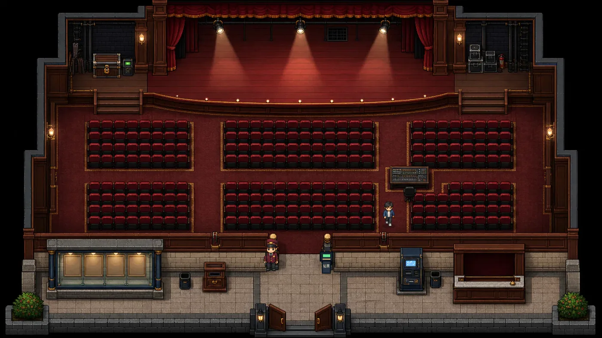
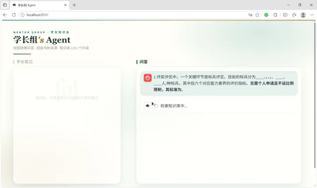
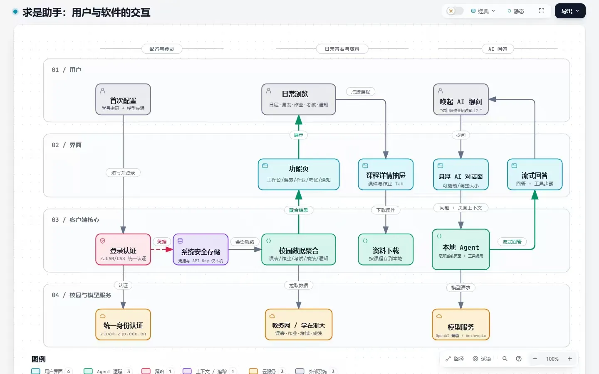
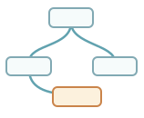
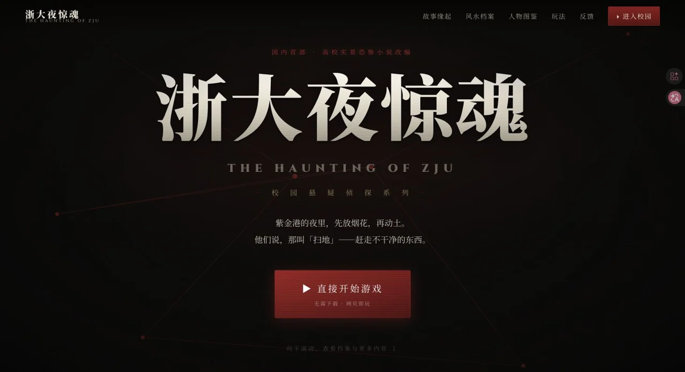

技术差异DIFFERENCE
和已有的开源项目、成熟方案相比，你们开发的技术有什么独特之处？
如何避免重复造轮子？如果决定再造一遍，是因为现有方案满足不了需求，还是为了学习、可控性，或其他明确的目标？

为什么再造一遍轮子？
和已有的开源项目、成熟方案相比，你们开发的技术有什么独特之处？
如何避免重复造轮子？如果决定再造一遍，是因为现有方案满足不了需求，还是为了学习、可控性，或其他明确的目标？
谁会在什么场景使用它？它解决了什么真实需求？
现在做出来的功能，是用户真正需要的吗？
项目发布后，如何持续维护、迭代和运营，兼顾社区活力与工程质量？
怎么吸引并留住贡献者？在开放协作中，代码审查、测试和版本管理如何帮助项目保持稳定？
随着模型、平台和同类技术演进，项目还能提供什么难以替代的价值？
哪些功能可能被更强的模型或平台原生功能覆盖？你们希望积累哪些优势，又会如何调整定位和技术路线？
(have fun exploring)
早晨 7:55，距离签到只剩五分钟。游戏从一段熟悉的浙大校园日常开始，把场景互动、像素探索和解谜串成一段意外的旅程。



《7:55》游戏简介
《7:55》是一款以浙江大学校园生活为背景的叙事探索解谜游戏，以2D像素RPG为主要表现形式，融合场景探索、互动解谜与3D空间玩法，在熟悉的校园环境中构建荒诞而有趣的冒险故事。
早晨7:55，距离签到只剩五分钟。玩家原本只想赶上早八，却发现校园里的时间与空间开始错位：消失的签到码、图书馆里需要开具《书包非本人证明》的占座事件、长出双腿逃跑的纸条，以及会重复玩家三秒前行动的影子……看似荒诞的事件背后，却隐藏着一套自洽的规则。
玩家将在CC98、图书馆、食堂、剧场、启真湖及教学楼之间穿梭，通过寻找线索、操作机关、破解谜题，逐步揭开时间异常背后的秘密。
游戏以校园日常为创作起点，将真实经历转化为富有想象力的互动体验，并在故事终章回归竺老“两问”：到浙大来做什么？将来毕业后要做什么样的人？希望玩家在解谜与欢笑之余，重新发现校园生活的意义，思考属于自己的大学故事。
未来，团队计划持续完善游戏内容，开发新篇章与支线玩法，同时建设校园共创平台，支持创意投稿、玩家反馈与进度查询，探索AI驱动的自动化投稿筛选与内容生成，让更多师生参与校园故事创作，并探索其在迎新、校庆及校园文化传播中的应用。
项目 · 内容
项目名称 · 7:55
项目类型 · 校园题材浏览器叙事解谜游戏
项目主题 · 从一次异常的早晨签到出发，在手机应用与紫金港校园之间调查、探索和解谜
面向平台 · 桌面与移动端浏览器；提供可构建的单文件游戏
已核实贡献账号 · zhu607705-coder、shiliuAurora、IonicJian、Veronicarrrrr
当前版本说明 · GitHub 最近已合并交付为 2026 年 9 月 5 日的 PR #45；本文同时纳入截至 9 月 6 日的本地后续玩法优化
原有项目基本信息表保留在本节上方；以下补充项目概况。
《7:55》是一款以浙江大学紫金港校园生活为背景的叙事解谜游戏。玩家从早晨 7:55 的闹钟、朋友消息和课堂签到进入故事。本来普通的签到操作逐渐出现异常，签到码散落在不同手机应用与桌面物件中，提交后又出现“经度与纬度不存在”等错误。玩家随后恢复角色身份、道具栏和移动能力，在寝室、图书馆、食堂、剧场、启真湖和教学楼中追查一份离开原页面的签到记录。
项目从学生熟悉的闹钟、校园卡、体育打卡、校园论坛、图书馆占座和教学楼空间切入，将手机界面中的设置与校园场景中的物件连接起来。网络切换、屏幕亮度、自动旋转、照片识别和论坛检索都可以成为解谜动作；地图中的证据、物品和场景状态也会反向影响手机中的任务与后续剧情。
项目最初形成于黑客松原型，早期重点是快速实现仿手机界面、签到码收集和基础剧情。随着章节增加，项目逐步扩展为由手机交互、俯视 RPG、追逐、节奏玩法、舞台灯光和时间迷宫组成的连续系统。验收阶段关注的内容也从“单个页面能否运行”扩展到剧情因果是否连贯、跨场景状态是否一致、失败后能否继续、存档能否恢复，以及交付版本是否具有可复现的测试证据。
项目希望验证三个方面。
第一，校园题材能否通过具体交互形成具有辨识度的游戏体验。项目不只使用校园建筑作为背景，还把签到、体艺、CC98、图书馆规则、校园卡和教学楼设施转化为玩法条件。
第二，手机应用与 RPG 场景能否共同推动同一条剧情。玩家在手机中取得的线索会改变地图中的可用行动，地图中获得的材料又会回到手机继续核对、认证或组合。
第三，浏览器技术栈能否承载连续剧情、二维地图、小游戏、音画调度和离线交付。项目需要同时处理 React 页面、Phaser 场景、Three.js 局部空间表现、共享状态、资源加载和多端输入。
主要目标用户是熟悉高校生活的学生，以及喜欢像素风、校园叙事、轻量解谜和荒诞幽默的玩家。项目通过浏览器运行，适合团队内部试玩、课程展示、黑客松成果完善和后续公开体验。桌面端提供键盘、鼠标与较完整的画面空间，移动端提供触控按钮、拖拽和响应式布局。
功能模块 · 功能说明
手机界面探索 · 在聊天、浙大钉、体艺、论坛、照片、天气、校园卡与设置之间寻找线索，完成跨应用操作
道具收集与组合 · 将数字、线条、齿轮、耳机、水滴、钥匙、票据和其他物件组合或拖到指定目标上
校园 RPG 探索 · 在寝室、校园、图书馆、食堂、剧场、湖区和教学楼中移动、调查、交谈和操作设备
深浅模式切换 · 深色观察用于读取历史痕迹和异常信息，浅色操作用于拾取、拖拽、控制设备和提交物品
章节特色玩法 · 图书馆证据调查、校园骑行追逐、剧场灯光、湖区划船与节奏钓鱼、教学楼电梯和错位楼梯
连续进度管理 · 任务提示、物品栏、章节事实、安全检查点和本地存档共同记录进度
多端与离线交付 · 支持桌面和移动浏览器，并可生成单文件游戏用于展示与分发
整部游戏围绕“时间、身份、记录和本人到场”组织。开场时，7:55 只是一次早八签到的截止时间；中段时，它成为签到记录停滞和湿纸异常的时间标记；终章时，旧钟、手机和纸质记录都需要重新对齐到 7:55。
项目持续要求玩家区分“看见了什么”“推测了什么”“系统记录了什么”和“哪些证据已经通过验证”。角色需要姓名、校园卡和操作资格才能行动；图书馆 022 号座位需要入馆记录、小票、识别报告和论坛公示才能恢复；最终签到又需要校园卡、纸质记录和现场时间共同成立。
前期剧情以校园日常和制度流程的荒诞化保持轻松感，后期逐渐进入更严肃的求学与责任命题。终章校史墙提出“到浙大来做什么”和“将来毕业后要做什么样的人”，使此前围绕记录、权限和证据的玩法与个人选择发生联系。
关闭闹钟并查看消息 → 在手机应用中找回签到码 0798 → 提交签到并进入异常事件 → 在寝室恢复身份、道具栏和移动能力 → 前往图书馆处理 022 占座书包并联系系统朋友 → 追踪离开页面的签到记录 → 经过食堂、骑行追逐和剧场灯光机关 → 在启真湖完成地点确认、划船和节奏钓鱼 → 恢复湿纸进入教学楼的时间线 → 在教学楼时间迷宫中修复旧钟、楼层与电梯关系 → 完成校园卡与纸质记录的双重签到 → 回答楼外两问并点亮灿若星辰灯
阶段 · 大致剧情 · 玩家主要操作 · 阶段结果
身份与行动恢复 · 系统承认自己没有修改记录的权限，玩家需要进入校园寻找其朋友 · 在寝室取得校园卡，通过部门黄页确认角色姓名，启动体艺锻炼，购买手柄并验证方向输入 · 角色获得身份、物品栏和移动控制，校园地图开放
图书馆 022 · 系统朋友与 022 号座位相连，座位被长期占用的书包封锁 · 核对入馆记录，查找旧版离座规则，生成物品识别报告，取得 022 小票与到访证据，并在 CC98 完成公示 · 022 恢复，系统朋友确认签到记录已离开原页面，并夹在停留于 07:55 的湿纸中
食堂与骑行 · 湿纸离开图书馆并继续在校园中移动 · 在食堂调查和追逐，随后进入 755 米骑行玩法，使用转向、跳跃、响铃和场景道具追赶目标 · 玩家到达剧场，追逐由静态调查转为连续动作
剧场 · 玩家试图通过舞台灯光逼停湿纸 · 核对票据和节目单，操作灯控与追光，完成舞台机关 · 被灯光控制的是替身，真正湿纸沿侧边逃离并留下水迹
启真湖 · 多来源线索将目标指向湖区 · 核对论坛、馆藏、照片和地图信息，取得划船条件，组装磁性钓竿，完成四次递进节奏钓鱼 · 取得关键材料和纸条，形成进入下一章节的完整证据链
3.5 章过渡 · 湖区事件后的照片、语音和目击记录需要重新整理 · 对照四项手机证据，恢复湿纸离开湖区、经过街机区域并进入教学楼的路线 · 教学楼入口获得可核对的剧情前置，章节衔接成立
教学楼时间迷宫 · 楼内时间、楼层和空间关系错位，现场时间与签到记录不一致 · 在深色观察与浅色操作之间切换，恢复气流、电梯轨迹、配电、传送带、旧钟和楼层关系，完成维修、追逐与错位楼梯 · 旧钟、手机和签到记录重新对齐到 07:55，双重签到条件具备
手机中的网络、亮度、自动旋转和应用入口会直接改变谜题条件；校园中的座位、票据、旧钟、电梯和公告栏也具有与手机数据对应的状态。玩家需要在两种界面之间往返，才能获得完整信息。
签到记录从页面中离开后，被转化为一张可在场景中移动的湿纸。它能够留下水迹、被追光照见、在湖面形成倒影、被磁性钓竿捕获，并在教学楼中暴露时间冲突。这样可以让手机中的抽象数据与校园中的实体行动保持同一条因果线。
序章要求找回数字；图书馆要求证明身份、位置和物品性质；湖区要求综合论坛、馆藏、照片与地图记录；终章要求旧钟、手机、校园卡和纸质签到记录共同成立。玩家逐步从"找到答案"进入"说明答案为何可信"。
系统吐槽、会被行政判定的书包、CC98 公示和校园应用权限构成前期的荒诞幽默。终章通过校史人物、楼外两问和灯光收束，将注意力转向求学目的、责任、独立判断和证据诚实。
该流程从开场即可进入，适合验收现场演示基本交互。
步骤 · 玩家操作 · 游戏反馈与结果
进入任务 · 关闭闹钟，进入手机主页并查看朋友消息，经历签到码散落事件 · 任务转为寻找四位数字，任务栏与物品栏开始记录进展
找到数字 0 · 进入签到相关页面，观察并点击页面中的数字线索 · 获得第一位数字 0
找到数字 7 · 在控制中心切换网络，进入浙大体艺并查看打卡次数中的线索 · 获得第二位数字 7，并理解应用对网络环境的要求
找到数字 9 · 开启自动旋转，操作桌面设置齿轮并查看背面 · 获得第三位数字 9，并取得反转齿轮
准备盆栽材料 · 收集水滴、耳机和头像上的斜线；组合盛水的耳机和钥匙，再用钥匙取得肥料 · 分散在不同应用的对象被转化为可使用道具
找到数字 8 · 给盆栽浇水、施肥，并把亮度调高至满足光照条件 · 盆栽开花，获得第四位数字 8
提交签到 · 切回正确网络，进入校务签到并输入 0798 · 签到反馈出现，随后触发经纬度异常与后续剧情
盆栽的浇水、施肥和照光可按玩家准备情况完成。输入错误或网络条件不符时，系统给出反馈，玩家可以修正后重试。
玩家用错物品、距离目标过远、尚未观察位置或处于错误模式时，游戏通常保留物品并给出可操作提示。追逐失败只重试相应片段，钓鱼失败或取消不会消耗关键剧情道具。离开地图回到手机时，章节事实和物品状态继续保留。
存档记录已经完成的稳定事实和安全检查点。逐帧位置、正在进行的节奏输入和瞬时动画不作为长期继续点。旧存档读取时需要经过版本迁移，避免任务文字已经更新而场景仍处于旧状态。
技术或工具 · 在项目中的用途
React 18、TypeScript · 手机页面、任务与物品界面、章节控制器、共享类型和剧情表现
Zustand · 管理跨页面、跨场景的游戏状态与持久化事实
Phaser 3 · 校园与室内地图、人物移动、碰撞、遮挡、二维互动和小游戏
Three.js · 第四章错位楼梯的局部三维空间表现
Vite、vite-plugin-singlefile · 开发预览、生产构建和单文件打包
localStorage · 保存章节事实、物品和安全检查点
Web Audio API · 音效、配音、音乐与节奏玩法的时钟和播放调度
Git、GitHub PR、GitHub Actions · 多人协作、审查、版本记录、构建检查与交付管理
Playwright 与浏览器调试工具 · 真实输入、跨浏览器、响应式布局、存档和视觉检查
MiniMax CLI、FFmpeg、ffprobe · 配音与音乐生成、裁切、响度处理、媒体规格验证和资产清单
项目曾探索 Godot Web 剧场方案，相关内容作为技术试验保留。当前正式运行以 React、TypeScript 和 Phaser 为主要框架，Three.js 只承担边界明确的错位楼梯场景。这样可以减少双引擎状态同步、资源导入和构建维护成本。
一个谜题经常跨越手机和地图。例如，玩家在图书馆取得证据，回到手机完成检索和公示，再返回图书馆改变座位状态。如果每个页面分别保存完成情况，容易出现任务栏、场景物件和物品栏不一致。
项目将章节进度、物品、已观察线索和检查点放入统一状态，由 TypeScript 控制器判断操作是否成立。React 和 Phaser 只提交玩家意图，例如"点击某对象""拖入某道具""在某位置按下交互键"。控制器检查物品、距离、模式、前置事实和幂等条件，随后统一写入状态，表现层再根据结果刷新。
推荐的状态流为：
玩家输入 → React 或 Phaser 场景适配层 → TypeScript 领域控制器 → 剧情事实、物品与检查点 → 存档版本迁移 → React、Phaser、Three.js 表现更新
长期事实可以进一步统一为版本化事件，例如 evidence_verified、item_transformed、checkpoint_committed 和 scene_transition_completed。每项事件记录来源、前置条件、幂等标识和存档版本，便于调试、回放和解释任务为何开放。
项目中的对白、任务提示、物品说明、音频时间线和章节参数分散在 TypeScript 与 JSON 文件中。验收阶段需要区分三类内容：剧情真源负责描述发生了什么；领域控制器负责判断何时可以发生；表现层负责播放字幕、动画和声音。
后续可为每个章节建立内容包：
text
chapter-name/
├── story.content.json
├── quest.content.json
├── items.content.json
├── audio.timeline.json
├── scene.contract.json
└── validation.rules.json
剧情编辑只修改内容文件，状态推进只修改控制器，音画资产通过稳定 ID 关联。这样可以降低同一句台词、同一任务阶段在多个组件中重复维护的风险，也便于自动导出完整游戏文本和检查未使用条目。
项目早期大量采用预绘制或 AI 生成的完整地图，能够快速形成校园氛围，但图片本身不包含道路、碰撞、遮挡、交互范围和出生点。后续通过截图和文字补坐标，出现了空气墙、门口不可达、角色穿入家具、前景遮挡错误和底图物件无法移除等问题。
现有"食堂碰撞体手动校准"页面支持选择矩形碰撞体、拖动、缩放、逐像素微调和 JSON 导出。开发模式也可以显示碰撞调试层。修改后的检查包括：
- 明显实体是否被阻挡。
- 空地、出生点和主要路线是否开放。
- 角色脚部是否停在正确边缘。
- 交互点是否能够从可行走区域到达。
- 允许从后方经过的墙体和家具是否只承担遮挡，不误设为大面积障碍。
下一阶段建议将每张地图整理为背景、可行走区、碰撞、遮挡、交互对象、锚点和视觉变体的资源包：
text
scene-name/
├── scene.meta.json
├── background.webp
├── walkable-mask.png
├── collision.json
├── occlusion.json
├── interactables.json
├── anchors.json
├── variants/
└── props/
门、桌椅、画像、旧钟、NPC 和任务道具应具有稳定对象 ID，视觉、碰撞、交互、深度和剧情状态共同引用同一对象。这样可以减少移动一个物件后还要分别修正多个无关联坐标的问题。
手机采用固定逻辑视口，地图采用横屏逻辑视口，由公共宿主等比例缩放。桌面端支持键盘与鼠标，移动端提供触控方向、交互按钮和拖拽。输入处理需要在页面失焦、场景退出、暂停和重试时清理，防止按键或监听器遗留。
音频系统通过时间线和统一时钟调度语音、音效与节奏判定。节奏玩法的判定时间不能依赖连续 setTimeout 累积，而应使用同一单调时钟计算目标时刻。声音播放失败时，普通剧情仍可继续；承担正式完成条件的演出则需要明确回执或兼容路径。
存档只记录稳定剧情事实、物品和安全位置。场景中的实时速度、半场节奏和粒子状态留在运行时。加载旧版本时执行迁移，避免出现已取得物品却没有后续任务、已完成对话但章节入口仍锁定等情况。
本地单文件已经包含大量地图、音频、动画帧和章节逻辑，验收材料记录的体积约为 256 MB。继续增加内容时，需要将在线运行和完整离线包视为两种交付配置。
在线版本可以按章节加载资源，优先加载当前场景和下一场景的必要素材。离线版本保留完整内容，但使用图片压缩、音频分段、spritesheet 去空白、内容哈希复用和生成清单，减少重复文件。构建阶段输出每个章节的资源体积、重复哈希、未引用资源和首屏预算，使 PR 能够直接审查资源增长。
运行时应在进入场景前预取必要图片和音频，离开后释放不再使用的大纹理、声音缓冲与 Three.js 几何体。长语音和音乐在靠近实际播放节点时再解码。
开发目录需要区分源码、可重建产物和临时诊断文件。dist/、浏览器 trace、录屏缓存、AI session、旧工作树、ZIP 和临时图片不进入普通提交。正式演示包通过 Release 保存，并记录对应提交、构建命令、文件大小和校验值。
AI 参与需求拆分、组件与控制器编写、素材接入脚本、问题定位、测试脚本和文档整理。团队负责提出体验目标、判断剧情和玩法方向、指出实际画面中的问题，并通过真实试玩确认结果。
项目也暴露了 Vibe Coding 容易产生的维护问题。随着连续修改，场景文件可能持续膨胀，同类状态散落多处，旧实现和兼容代码没有及时删除；AI session、Playwright trace、截图、单文件构建和旧工作树也会占据大量磁盘空间。代码仍能运行时，这些问题容易被推迟处理，后续合并和调试成本会快速上升。
建议采用以下约束：
- 每轮 AI 任务记录基线提交、允许修改目录、禁止回退项和验收路径。
- 按剧情领域建立小型上下文包，例如"图书馆 022""启真湖材料链""第四章旧钟"。
- 为超大场景控制器和内容文件设置规模提示，触发职责审查和必要拆分。
- 对 session、trace、截图、视频、旧构建和旧工作树设置保留期限，只保存已被引用的诊断证据。
- 定期删除失效文档、重复素材和退出正式运行的兼容层，避免继续进入模型检索结果。
安装 Node.js 22 后，在仓库根目录执行：
bash
npm ci
npm run dev
打开终端显示的本地地址即可试玩。开发者检查点用于快速定位指定谜题，但检查点完成后仍需从正式入口验证前后衔接。
常见检查命令包括：
bash
npm run typecheck
npm run qizhen:validate-fishing
npm run build
npm run build:single
npm run verify:single
这些命令分别用于类型检查、钓鱼规则校验、常规构建、单文件构建和产物结构检查。构建通过只能证明程序能够生成产物，无法证明道路可达、谜题可完成、触控可用或存档能够恢复。因此还需要浏览器中的真实操作。
验收顺序采用两层检查。先进行动态极限路径与视觉检查，覆盖桌面、移动端、进入和退出、失败与重试、存档与重载、遮挡、缩放和文本溢出；再进行静态审查，包括类型、领域断言、资源引用、存档迁移、构建产物和代码差异。
成员／账号 · 分工
朱航成 · 游戏程序集成、启真湖与第四章部分
潘潇莹<br> · 剧情文本、任务提示与交互文案优化<br>游戏设计 食堂部分
林子鉴 · 第三章场景交互、大地图构建<br>视频剪辑 图书馆部分 手机 ui
董睿 · godot 版开发 细节优化和玩法设计 剧场开发 手机 ui
以下日期按项目材料整理。规划文件可以证明方案已经提出，已合并 PR 和验证记录用于证明具体实现或修复进入了相应版本。
时间 · 阶段与主要工作 · 形成的成果
7 月上旬 · 明确手机解谜原型，规划签到码、道具组合、网络与亮度操作 · 建立第一章基本结构和像素手机界面方向
7 月 17 日至 20 日 · 整理工程，完善手机交互、身份门控、校园移动和图书馆调查 · 形成手机与校园 RPG 的基础衔接
7 月 20 日至 24 日 · 统一桌面与移动端适配，补充浏览器和构建检查 · 提高不同尺寸下的可用性，形成开发者直达与专项验证方法
7 月 26 日至 30 日 · 深化食堂和第三章流程，同时探索 Godot 剧场 · 验证跨引擎方案，同时暴露资源、状态和迁移成本
8 月 1 日至 20 日 · 接入剧场至启真湖路线，完善码头、湖区玩法、节奏钓鱼和第四章检查点 · 形成较完整的后半段连续体验
9 月 3 日至 5 日 · 优化第三、四章因果、环境线索与交付记录 · PR #45 形成一项已记录的发布基线
9 月 6 日以后 · 继续优化字幕、错位楼梯、追逐楼梯间、剧场表现和钓鱼一致性 · 形成后续本地候选版本，仍需统一合并和整体验收
项目早期常使用"把这里改得更有趣""这里有空气墙""这一段不连贯"等体验描述。随着章节复杂度上升，需要把这些反馈转换为明确条件：玩家从哪里进入，必须具备哪些前置事实，能够执行什么动作，成功后写入什么状态，失败后怎样恢复，退出再进入是否保留进度。
以图书馆为例，验收不能只看书包是否消失，还要确认旧规则、识别报告、座位小票和到访证明可以按允许顺序取得，论坛公示后座位状态改变，玩家离开再回来仍能继续。以钓鱼为例，验收也不能只看捕获动画，还要确认输入判定、张力、失败重试、道具保留、一次性结算和场景退出都符合约定。
试玩并记录具体问题 → 使用检查点复现 → 判断问题属于显示、输入、碰撞、前置条件、资源还是存档 → 划定修改范围和禁止回退项 → AI 辅助修改代码与数据 → 运行专项检查和真实操作 → 检查相邻入口、退出、失败与重载 → 记录证据并整理 PR
发现问题时，应记录场景位置、触发动作、当前物品、当前模式、实际结果和预期结果。修复后回到同一检查点操作，并补测紧邻路径。例如缩小桌边碰撞后，还要确认角色不会穿桌、交互点仍可达、离开后能够重新进入。
项目中途曾尝试 Godot Web 剧场。该试验证明 Godot 能够实现相应场景，但迁移还会引入素材导入、React 与 Godot 通信、双运行时生命周期、状态同步、移动端输入、Web 导出和离线构建等工作。
这次经历说明，引擎选择需要在项目早期结合已有手机界面、主要交互方式、团队熟悉程度、目标平台和交付形式进行验证。单独比较某个引擎能否制作某种画面，无法覆盖迁移成本。当前方案收敛到 React、TypeScript 和 Phaser，Three.js 只在局部使用，使核心剧情和存档保持一套实现。
AI 能够快速增加功能，也可能把多个阶段逻辑持续写入同一个文件，产生超大控制器、重复条件和隐蔽耦合。长会话又会保留大量 session、截图、trace、录屏和构建产物，磁盘占用不断增加，模型搜索时还可能读取已经过期的输出。
项目后续需要建立三类治理机制。第一类是代码边界，按领域拆分状态、规则、表现和资源，超大文件触发职责审查。第二类是版本边界，每次任务记录基线提交、改动目录和权威来源。第三类是临时文件边界，定期清理 AI session、Playwright trace、旧 worktree、ZIP 和单文件测试产物，只保留已进入验收记录的证据。
Git 文本合并只能解决行级冲突，无法自动判断两个分支中的玩法版本哪个应当保留，也无法证明合并后的游戏仍可完成。功能整合需要明确权威来源和禁止回退项，版本验收还需要从正式入口检查关键流程。
PR 建议固定记录基线提交、问题复现、修改范围、剧情事实、存档影响、资源变化、动态检查、静态检查和已知边界。大型修改拆成状态控制、场景资产、表现层和文档等较小单元。主分支的必要质量门槛放入 GitHub Actions 和分支保护，不依赖个人电脑上的本地钩子。
验收材料中已有的记录包括：PR #45 的发布检查和定向多浏览器验证；后续钓鱼候选版本的类型检查、规则校验、单文件构建和多浏览器实玩。上述证据对应指定版本和路径，不能替代整部游戏在所有设备上的完整重测。
[7-55.mp4]
预绘制地图能够快速建立氛围，但可行走区、碰撞、遮挡和交互点没有同步形成，导致后期出现空气墙、门口不可达和视觉与碰撞不一致。现有食堂校准工具缓解了坐标调整问题，但尚未成为覆盖所有场景的通用地图编辑器。
后续从教学楼、剧场和启真湖等返工较多的场景开始，补建道路、障碍、遮挡、锚点和交互对象数据。先验证主要路线，再叠加高精度美术。固定背景继续保留在底图中，高频变化对象逐步拆成独立 Sprite 和状态变体。
跨应用线索、长道具链、深浅模式和多阶段机关提供了探索空间，也可能使首次玩家难以判断下一步。开发者熟悉答案，容易低估提示不足和入口不明显的问题。
后续邀请未参与开发的同学从正式入口试玩，记录停留时间、重复操作、错误使用、提示打开次数和退出位置。根据实际数据调整线索可见性、任务文字、失败反馈和辅助模式。
更强模型能够一次修改更多文件，但也可能把局部需求扩展到共享状态、公共输入和旧章节。若没有明确边界，容易出现旧实现被恢复、已验证功能被覆盖或文档与代码不一致。
本地单文件约 256 MB，图片、音频和动画资源仍有压缩与去重空间。真实手机机型、弱网、长时间运行和整段流程覆盖也不充分。
后续建立章节资源预算、重复哈希报告和未引用资源检查；在线版本按章节加载，离线版本保留完整资源清单。扩大真实设备测试，检查首次加载、触控、后台切换、音频恢复、内存占用和长时间运行。
根目录说明、历史引擎方案、局部开发文档和当前正式实现之间仍可能存在差异。素材来源、生成方法和许可信息也需要继续整理。9 月 6 日以后的本地优化尚未全部进入同一 GitHub 交付版本。
正式展示前应统一源码、运行说明、演示包、截图、视频和验收记录。每个 Release 记录提交、构建命令、文件大小、校验值、浏览器范围、已验证路径和已知问题。
优先事项 · 准备怎样做 · 如何判断有效
整理地图空间数据 · 为问题地图补建道路、碰撞、遮挡、交互点和锚点，拆出高频动态物件 · 人物能走完主要路线，入口和物品点可达，阻挡与画面一致
扩展可视化编辑器 · 在现有矩形校准基础上增加可行走区、遮挡、交互与出生点编辑 · 成员能够直接标注边界并导出数据，减少反复描述坐标
控制 AI 返工成本 · 每轮记录基线、范围、禁止回退项、验证路径和临时文件清单 · 同一问题的重复修改减少，版本来源可以追踪
统一发布版本 · 收口本地候选改动，复测正式入口、失败、重试、退出、重载和关键存档 · 源码、文档、视频和构建产物对应同一提交
优化资源加载 · 建立章节清单、压缩与去重，在线版本采用分章节加载 · 首次加载资源减少，单文件体积和峰值内存下降
扩大玩家测试 · 邀请陌生玩家和真实手机参与试玩 · 根据实际卡点调整提示，形成问题记录和修复闭环
Godot 移植 · 评估现有技术栈与 Godot 的映射关系，逐步迁移场景、角色、交互和存档系统，优先保证核心玩法可运行 · 核心场景可在 Godot 中正常运行，存档兼容，性能不低于现有版本<br>
Honesight 为摄影爱好者设置每周拍摄任务，把图片分析、作品集与社区交流放在同一个练习空间。
HONESIGHT 是一个面向摄影爱好者的学习与交流平台，围绕“学会观察、学会拍摄”的理念，帮助用户从随手拍摄走向有意识的练习与创作。平台提供每周摄影任务、今日灵感、AI 摄影分析、个人作品集、摄影社区和成长记录等功能。用户可以选择练习主题，上传真实照片，获得关于曝光、对焦、构图和色彩的具体反馈，并根据建议改进下一次拍摄。作品与练习记录会沉淀在个人主页中，形成“选择练习—拍摄上传—获得反馈—整理作品—持续成长”的完整摄影学习闭环。
一页介绍我们的项目
用自己的话写，每题一两句就好。翻到第二页，可以看到一份写好的例子。
项目名 Honesight 小组名 光圈之外
1 你们想做什么？
想象你在跟隔壁班同学介绍。谁会用到它，或在什么地方看到它？
我们制作了一个摄影成长网站，无论你是零基础小白还是进阶摄影师，都可以在网站获取摄影灵感、在社区交流心得，网站最核心的功能是AI辅助修图与每周一练，让用户在AI辅助下提升摄影、后期技术，记录下成长
2 为什么想到做这件事？
说一件让你们开始动手的小事。那时谁遇到了什么？
最开始我们观察到，很多时候在网上看到调色教程，但是由于场景不同，我们没有办法复刻下来，即使这一次复刻了，下次自己后期加工可能还是不会。所以我们就想到利用ai来辅助我们完成修图，既能选择ai提供参数，自己动手尝试，也能选择ai直接修图。
3 能带我们走一遍吗？
挑一次制作、实验或使用的过程。先做什么？接着有什么变化？最后呢？
先选择一个摄影练习主题，了解任务目标并拍摄或上传照片；接着使用 AI 摄影分析，查看构图、曝光、对焦和色彩等方面的反馈，根据建议调整拍摄方式；最后把作品保存到个人作品集，记录练习进度，在持续实践中提升摄影观察力。
4 现在做到哪一步了？
写一件已经完成或试过的事。如果还在想办法，也可以说说接下来想试什么。
网站的核心功能都已上线，接下来会加上一些进阶的后期功能以及更个性化的训练
附上一件你最想给大家看的材料 选填
一张草图、一次试验的照片或一页 PPT 都可以。把它和这一页一起交来。
材料名或页码…… 我想请大家看……
这组同学手里已有一份项目方案。看看他们怎样用一个人的经历，把想法讲清楚。
想持续关注 CC98 上的一个话题，却要反复换关键词搜索？这个插件从这个日常麻烦出发，尝试帮用户找到相关帖子，并订阅后续内容。


由于CC98的搜索栏只能进行词语精确匹配，且无法订阅某一话题，用户想要搜索某个主题只能将相关的词语一个一个搜索并注意翻阅，因此我们开发了一款根据用户提示语句或关键词AI自动搜索的插件，既能帮助用户快速得到相关主题的、具有较高质量的信息，又具备订阅某一个主题、当某个订阅主题的新帖出现时能够使用钉钉或者邮箱进行提示的功能，用户需要通过浙大邮箱进行注册登录，可以设置搜索强度和通知渠道、通知时间间隔等内容。
在Github上面拉取前端代码，打开浏览器拓展，将项目文件夹拖入
之后用该浏览器打开CC98（支持VPN访问），右下角出现插件图标
即可使用
主要技术
- 运行环境：Chrome Extensions Manifest V3，兼容 Edge。
- 语言 / 模块：原生 JavaScript（ES Modules），零构建、零框架、无 npm 运行时依赖。
- 进程模型：内容脚本（注入页面、管 UI 与业务）＋ 后台 Service Worker（网络转发、徽章轮询）＋独立设置页 / 工具栏弹窗。
- 存储：chrome.storage.local（LLM 配置、后端 JWT，持久化）；chrome.storage.session（CC98 登录态，内存态，关浏览器即清空）。
- 网络：所有跨域请求经 chrome.runtime.sendMessage 转发到 Service Worker 统一 fetch，绕过 CORS。
开发工具
- Chrome DevTools（F12）＋ chrome://extensions「开发者模式 / 加载已解压的扩展程序」。
- Git + GitHub 私有仓库（前后端分工协作）。
- AI 编程助手：Claude Code（辅助代码生成、联调与文档）。
公共 API / 外部服务
用途 · 地址 · 说明
LLM 推理 · 用户自配 · OpenAI 兼容 + Anthropic 双协议
钉钉机器人 · oapi.dingtalk.com Webhook · 通知渠道之一
开源组件 / AI 编程工具
- 开源组件：marked（本地打包的 Markdown 渲染库，vendor/marked.esm.js，不走 CDN）；其余为 Chrome 平台 API，无第三方运行时依赖。
- AI 编程工具：Claude Code。
核心功能实现方式
1. AI 搜索总结（状态机流水线）
search-pipeline.js 编排 5 个阶段，带进度回调、可随时中止：拆分关键词 → 搜索 CC98 → 筛选主题 → 阅读回复 → 生成总结
- 拆分关键词（keyword-generator.js）：调 LLM 把自然语言问题拆成 N 个搜索关键词，JSON 容错解析，失败回退到中文分词。
- 搜索 CC98（cc98-searcher.js）：调 /topic/search，内置 1.2s 限速、分页、去重、403 重试。
- 筛选主题（phase1-filter.js）：按「标题关键词重叠 + 回复数/点击数热度」做启发式评分取 Top N，不引入 embedding 重排。
- 阅读回复（reply-reader.js）：逐帖读主题详情与楼层，清洗 HTML、按字数截断；单帖失败不致命。
- 生成总结（summarizer.js）：把主题 + 楼层拼成文本交给 LLM，输出带来源编号的 Markdown 总结。
2. 订阅新帖提醒（前端配置，后端推送）
- 订阅：订阅表达式「空格 = 且，/ = 或」，实时解析校验，单账号最多 10 个订阅。
- 后端固定每 10 分钟扫描新帖、命中合并推送；前端不轮询，打开通知页时读取、60s 内走本机缓存。
3. 登录态与安全边界
- 转发请求默认 credentials:'omit' 不带 cookie（WebVPN 除外），论坛内容用 <forum_content> 标签包裹防提示词注入。
4. 校外 WebVPN 适配
WebVPN 把主机名用 AES-128-CFB 加密进路径；WebCrypto 不支持 CFB，扩展用「零 IV 单块 AES-CBC + 手工 CFB 反馈链」实现 CFB，动态算出 api.cc98.org 的编码路径，搜索结果链接也指向 WebVPN。
主要技术
- 运行环境：Python 后端服务，基于 FastAPI 提供 HTTP API。
- Web 框架：FastAPI + Uvicorn，用于提供登录、订阅、通知、扫描等接口。
- 数据库：SQLite + SQLAlchemy ORM，保存用户、订阅、通知渠道、通知历史和扫描游标。
- 定时任务：APScheduler，后端按固定间隔扫描 CC98 全站新帖。
核心功能实现方式
1. 用户登录与鉴权
2. 订阅管理
后端提供订阅的创建、查看、修改和删除接口。用户可以创建最多 10 条订阅。订阅表达式规则为：
Plain Text
空格 = 且
/ = 或
例如：
Plain Text
微积分/微甲/vjf 历年卷
表示帖子内容需要同时包含“历年卷”，并且还要包含“微积分 / 微甲 / vjf”中的任意一个。后端会对订阅表达式做基本校验，过滤过短或无效关键词，减少误报。
3. 新帖扫描（完整流程图可在后端 README 查看）
如果服务器需要通过 RVPN 或代理访问 CC98，可以通过 CC98_TRUST_ENV 控制后端是否读取系统代理环境变量。
4. 匹配与去重
后端会把新帖与所有启用订阅进行匹配。匹配命中后生成通知记录。为了避免刷屏，系统在多个层面做去重：
阶段 · 处理目标
新帖扫描 · 避免同一轮扫描中重复处理同一帖子
帖子记录 · 同一个 CC98 Topic 只保留一份记录
订阅匹配 · 同一用户的多条订阅命中同一帖子时只生成一次结果
通知记录 · 同一用户对同一帖子最多拥有一条通知
5. 通知渠道
6. 后台管理与部署
主要接口
我们尽量让敏感信息只存在于真正需要它的位置。
数据 · 保存位置 · 是否上传产品后端
AI Search 问题与结果 · 浏览器 · 否
CC98 AI+ 登录状态 · 浏览器 · 调用 Watch API 时携带
用户订阅 · 后端数据库 · 是
通知历史 · 后端数据库 · 是
此外，当前项目还包含以下安全措施：
- 验证码具有有效期和错误尝试次数限制；
- 用户接口根据登录状态识别当前用户，不接受客户端自行指定其他 user_id；
- 管理接口使用独立的管理员认证；
- 生产环境可以关闭公开 API 文档并限制允许访问后端的前端来源。
成员 · 任务 · 具体内容
本项目最初围绕 CC98 的信息检索和订阅提醒展开。由于黑客松时间有限，我们没有一开始就追求完整的大系统，而是先确定 MVP 目标：让用户能够在 CC98 页面中使用插件进行 AI 搜索，同时可以设置订阅关键词，在后续出现相关新帖时收到提醒。
在订阅功能的 watch 后端实现方法上，我们一开始的方案是在后端定时搜索用户设置的关键词。后来测试发现，CC98 全站产生的新帖从发布到能够通过搜索接口搜到，通常会有一到两个小时甚至半天的延迟，如果订阅功能依赖搜索接口，就无法及时提醒。因此我们把订阅功能调整为后端主动扫描 CC98 全站新帖列表，主动和用户设置的订阅匹配，而不是扫描搜索结果。这样可以更符合“关注之后及时发现新内容”的使用场景。
后端关键词规则也经过了多轮讨论和调整。最初的方案是全部调用 LLM 做模糊匹配，但是很难控制成本。我们希望它既接近普通搜索习惯，又能表达同义词关系。最终采用空格表示 AND、斜杠 / 表示 OR 的规则。例如 微积分/微甲/vjf 历年卷 资料 表示必须同时匹配“历年卷”和“资料”，同时“微积分、微甲、vjf”中任意一个出现即可。测试时我们使用过 大一/求助/军训 这类关键词做烟测，因为相关新帖较多，更容易验证订阅提醒链路。
在匹配规则测试中，我们也发现了一些边界问题。例如过短关键词会带来大量误匹配，单字关键词很容易命中无关帖子；同时，部分标点如果处理不当，可能会影响像 C++ 这样的关键词。因此后端对订阅表达式增加了长度限制和基础校验，尽量避免单字泛匹配、超长表达式和异常输入带来的误报或滥用风险。
通知功能在开发过程中也做过优化。早期测试时，多个订阅命中同一个帖子可能导致重复提醒，钉钉消息也容易刷屏。后来我们把同一轮扫描中命中的帖子合并成一条通知，并增加去重逻辑，避免同一个用户、同一个帖子、同一个渠道被重复发送。这样用户收到的是一条包含多个匹配帖子的汇总消息，而不是连续多条零散提醒。
[CC98 AI+ 演示视频.mp4]
- 会话历史记录保存。
- 如果说一些需要人工大量调研研究的信息可能还需人工 ，而且貌似ai搜索范围不大 基本上跟人差不多 总结部分可能还人看得细一点 ai总结可能会遗漏一些细节 总结可能会携带不care的信息比如作者完整id名（虽然这样更真实有信但会加重读回答的负担）。
- 感觉最大的限制在于搜索范围的问题？目前ai搜索范围人工完成也不久，如果要有替代性可能需要发挥ai多轮有方向的搜捕大数据能力， 或许可以根据问题决定搜索范围，多轮不断完善 读取可以可视化一下 让用户比较清楚 比如结果页能显示本次实际搜索和阅读范围，比如找到多少个不同帖子、成功读了多少帖、有没有读取失败。
- 搜索结果或许可以支持继续追问或补搜，保留已经读过的帖子，只处理新增内容。不需要每次重新开始整套搜索。
转专业条件、推免规则和奖助政策散在不同网页。学长组 Agent 把这些资料整理成可提问的入口，方便同学顺着问题查找校内信息。


想查浙大的转专业条件、推免规则或奖助政策时，相关信息往往分散在不同学院和部处的网站上，同一事项也可能有不同年份的通知。学长组 Agent 是面向浙大学生的网页问答工具。输入问题后，它从整理过的校内政策、通知和办事指南中检索资料，结合上下文回答，并在回答下方列出来源。以「数学学院转专业需要什么条件？」为例，可以先看条件摘要，再打开原文核对适用对象、发布日期和具体条款，也可以继续追问申请流程。遇到资料不足的问题，系统会提示暂时无法确认。除了政策问答，它还支持查课程和授课教师，可以用「数分」这类同学常用的简称找到具体课程，再查看教师评分和评教摘录，作为选课参考。
一页介绍我们的项目
项目名 学长组 Agent 小组名 学长组 Agent 项目组
1 你们想做什么？
我们想做一个浙大学生能直接提问的网页助手。转专业、推免、奖助这些事可以在同一个地方
查，看到答案后也能点开原文核对。
2 为什么想到做这件事？
比如，想转入数学学院的同学，往往要翻学院官网、找当年的通知，还要确认看到的是哪一年
的要求。我们想把找通知和核对要求这两步放到同一个页面里。
3 能带我们走一遍吗？
先在网页输入「数学学院转专业需要什么条件？」系统会整理查到的要求，并列出对应来源。接
着可以打开学院原文核对具体条款，或者在原对话里追问「申请流程是什么？」
4 现在做到哪一步了？
我们已经做出了可操作的网页版本，能演示政策问答、查看引用和继续追问。也可以用「数分」
这样的课程简称查找具体课程，再看授课教师的评教信息。
附上的材料
《演示视频.mp4》约 54 秒。可以看提问后回答逐步出现，以及如何展开参考片段核对来源。
 05.ZJU Agent
05.ZJU Agent求是助手把课表、作业、考试和通知收进一个本地优先的校园助手，还可以直接询问下一项任务的截止时间。

1. 项目基本定位：
求是助手（ZJU Campus Agent）是一款本地优先的浙江大学校园智能助手，针对学在浙大、教务网、素拓网等平台信息分散、需要反复切换的痛点，将统一身份认证、课表、作业、考试、成绩、通知和课件资料聚合至同一应用内。
2. 核心功能设计：
（1）完成一次登录后，首页将直接展示未来 48 小时日程、学业快览和待办作业。
（2）课表支持按学期查看并导出，点按对应课程即可查看详情与课件。
（3）所有资料按课程分类下载至本地存储。
（4）应用接入大模型，悬浮 AI 对话窗可感知用户当前所在页面，支持通过自然语言查询“这门课作业何时截止”这类问题。
（5）Windows 端额外配备可显示日程的桌面挂件。
3. 技术与开发进展：
（1）项目基于 Flutter 开发，账号密码与模型 Key 仅存储在本机系统安全存储区域，所有数据不上云。
（2）应用支持在 Windows 端运行。
从挑选课程到编排志愿，ZJU 选课助手把课程探索、教学班选择和排课方案比较串在一起。


ZJU 选课助手是一款面向浙江大学学生的一站式智能选课规划工具，旨在解决传统选课过程中课程信息分散、教学班选择繁杂、课表安排复杂、方案比较困难等问题，让选课规划更加高效、科学、便捷。
项目围绕学生从课程探索到志愿填报准备的完整需求，构建了一套集课程信息整合、教学班比较、多方案规划、AI 辅助排课、课表可视化与冲突校验于一体的选课辅助系统。学生可以便捷地查询课程信息，结合个人兴趣、时间偏好与学业需求筛选教学班；通过可视化课表直观比较不同选课方案，并借助 AI 生成个性化排课建议，及时发现和调整潜在冲突，最终形成清晰、可执行的选课计划。
ZJU 选课助手不仅希望减少学生在信息搜集、课程比较和课表调整上耗费的时间与精力，更致力于将复杂、繁琐的选课过程转变为直观、灵活、智能的自主规划体验，帮助每位学生更从容地做出选课决策，规划适合自己的理想课表。
开发背景：
ZJU学生苦彩票系统久矣！学生需要综合考虑课程内容、教师评价、上课时间和选上的概率，设计选课策略，而相关信息分散在教务系统与评价网站中，缺少统一的规划入口，且选课机制复杂，规划需要耗费大量的时间精力。ZJU 选课助手定位为辅助决策工具，帮助学生从查找课程、比较方案到准备填报，完成选课前的规划。
解决的痛点：
- 信息分散： 课程安排与教师评价需要反复切换页面查看，比较效率低。
- 安排复杂： 同一课程有多个教学班，人工检查时间冲突、整理首选和备选费时费力。
- 方案难比较： 不同选课方案缺少独立保存和对照方式，调整时容易混淆。
- 规划困难： 部分用户不熟悉操作流程和选课规则，也难以将个人偏好转化为具体课表。
目标用户：
主要面向有选课规划需求的浙江大学学生，尤其是需要比较多个教学班、协调复杂课表的学生（预置课太烂的倒霉蛋bushi）。
核心功能：
- 课程探索： 同步教务课程，按课程或教师搜索，查看教学班信息，并按需参考教师评价。
- 多方案规划： 创建独立计划，管理候选教学班，调整首选与备选顺序。
- 课表与校验： 可视化展示课程安排，提示时间冲突、志愿限制及待核对信息。
- AI 辅助： 根据候选课程和已确认偏好生成课表建议。
> 下载运行包，启动工作台
>
>
>
>
> 同步当前课表
>
>
> 新建计划
>
>
> 搜索想报的课程
>
>
> 挑选目标课程的教学班
>
>
> 了解老师信息，报录比等教学班信息（评价和均绩数据均来源于chalaoshi，本项目仅作搬运和摘要，请谨慎采纳）（chalaoshi提供两个站点，其中主站更新及时但是需要🪜，备用站无需🪜但是评价具有滞后性）
>
>
> 调整志愿顺序
>
>
> 对照课表检查安排
>
>
> [可选] 如果有需要，启用AI辅助排课功能
>
>
> 核对后导出清单
>
>
> [可选] 本机备份处理
>
>
>
>
> 主要技术栈
>
>
> API与外部服务
>
>
> 核心功能实现方式
>
>
> 运行方式
>
>
简要记录项目需求分析、功能开发、测试优化等过程（不一定需要很复杂，但是最好能覆盖整个开发时间线，至少要有头有尾），并说明开发中遇到的主要问题以及解决方法。可以结合任务记录、会议记录或代码提交记录进行说明。
需求分析：在暑期集训时，经过团队成员的讨论，发现选课给大家带来了很大的困扰，决定开发一站式的选课助手，解决这个问题。经过多轮讨论与方案迭代，我们瞄准了信息分散，安排复杂，方案难比较，规划困难等痛点。
产品设计：根据需求，我们设计了产品的形态，功能和交互逻辑，并完成了前置验证，然后搭建代码的框架
开发：在暑期黑客松期间，我们根据架构与接口并行完成基本功能的开发，实现了第一版的功能
测试优化：完成开发后，在测试中暴露了一些问题，正在逐步优化中
发布v1
不足：
1. 课程搜索目前仅支持按课程名搜索，后续会加入按课程序号，按时间段等多样化的搜索方式
2. 部分chalaoshi上未出现的新老师以及一门课程多个老师时会出现教师名字未知的情况
3. 由于开发时间的问题，未在真实第一轮选课场景下进行测试，当前测试局限于未开放时间段选课（当前待定人数为0）与合成数据
后续计划：
1. 等后续开放选课时间进行真实测试，并优化现有问题
2. 确认稳定可用后，尝试开源推广

07.KnowFlow第一次进入陌生领域时，连该从哪里提问都很难。KnowFlow 让学习者沿着一个问题继续追问，并按需要调整回答深度。

KnowFlow 是一款面向跨专业学习者、零基础学习者和陌生领域探索者的 AI 个性化学习工具，旨在降低学习新领域时的信息理解与知识整理成本。
用户可以通过 AI 问答探索陌生知识，选择不同回答深度，从入门解释逐步深入到专业和论文级内容。系统能够从问答和导入的学习材料中自动提取知识点，构建可视化知识树与知识图谱，呈现知识之间的层级结构和横向关联。用户还可以对知识节点进行编辑、移动、合并和搜索，并通过连续追问不断扩展自己的知识体系。
KnowFlow 将 AI 问答、知识探索与知识管理结合起来，让学习过程中的零散信息逐渐形成结构化、可视化、可持续积累的个人知识网络。
 08.bilibili-study-extension
08.bilibili-study-extension搜一门课或一条健康饮食视频时，推荐内容里常常夹着推广。这个 B 站辅助插件允许用户按自己的规则整理推荐，筛掉干扰。
B站综合插件是一款面向学习和信息获取的浏览器辅助工具。我们在B站搜索课程、健康饮食等视频时，常遇到刻意引流和推销。有些推广被包装成经验分享，容易影响对内容的判断；广告卡片也会占据浏览空间。
插件用可调整的规则整理推荐内容：识别明确广告、直播、用户指定的视频类型和标题关键词；只有出现商品链接、购买按钮，或销售对象与购买引导同时出现时，才收起营销卡片。普通赞助、外链和低播放量不会单独触发过滤，用户也可以恢复单张卡片。
目前，项目已初步完成观看统计、严格学习模式、观看队列、AB循环、弹幕与评论关键词过滤，以及时间点和课程进度记录，并通过构建与规则检查。接下来，我们会细化分类标准、继续在真实浏览器中验证效果，并探索结合官方播放器的独立学习站点，让用户更专注地寻找和学习需要的内容。
---
项目名称 · B站综合插件
项目版本 · v0.1.5
项目类型 · 浏览器扩展（Chrome Extension，Manifest V3）
适用平台 · Chrome / Edge 等基于 Chromium 内核的浏览器
作用范围 · 仅在 *.bilibili.com 域名下的页面生效
项目形式 · 小组课程项目 / 团队开发
团队成员 · 夏一鸣 谢烨阳
指标 · 说明
功能模块 · 8 个（界面优化、观看统计、严格学习模式、观看队列、学习沉淀、评论/弹幕过滤、数据管理、弹窗与提醒）
权限申请 · 4 项运行时权限（storage / alarms / tabs / idle）+ 1 项主机权限（*.bilibili.com）
存储模型 · 本地存储，8 个逻辑数据域，schema 版本 v2
页面注入 · 内容脚本 document_start 时机注入，覆盖全部 B 站子域
后台任务 · 每日维护闹钟（周期 1440 分钟）驱动数据清洗与到期检查
数据保留 · 观看明细按周粒度保留 8 周，屏蔽记录最多 100 条
计时精度 · 小时粒度记账，单次采样停留 ≥10 秒计入、≥300 秒无操作判定不活跃
消息通信 · 统一 RPC 客户端，12 秒超时保护 + 错误引导
内容识别 · 9 类角标 + 广告/直播角标 + 营销启发式 + 自定义关键词，全部本地判定
版本 · 关键变化
v0.1.5（当前） · 八大功能模块成型：界面优化、观看统计、严格学习模式、观看队列、学习沉淀、评论/弹幕过滤、数据管理、弹窗与提醒；存储 schema v2 与 v1→v2 迁移落地
- 可运行插件包：本目录即完整扩展包，可直接以"加载已解压的扩展程序"方式安装运行，无需编译；
- 本文档：覆盖项目全貌、使用流程、技术实现、开发过程与后续计划；
- 演示视频：见第七部分（待上传）；
- 用户数据备份说明：用户通过控制台"数据管理"页可自助导出 / 导入 JSON 备份。
---
B站（Bilibili）已经成为大量学生获取学习资源的主要平台之一，大量高校课程、考研、考证、编程、公开课等优质内容以免费视频的形式沉淀在站内，许多学习者每天在 B 站投入数小时。然而 B 站的产品定位本质上是一个娱乐社区，其推荐算法和页面设计都围绕"留住用户、增加时长"展开，这和学习场景产生了直接冲突：
1. 信息流高度混杂：首页推荐流里，广告卡片、直播推荐、营销软广与正常学习内容交织在一起，用户在"找课"的过程中不断被无关内容打断注意力，常常"打开来学习，一刷两小时"。
2. 缺乏学习向的工具支撑：B 站自身没有面向学习的观看统计（无法区分"看课"与"刷视频"）、没有专注约束（无法防止中途切走）、也没有对视频内容做时间点标记与片段复习的原生能力。
3. 学习过程无沉淀：看到一个重点片段，只能靠手动记时间或反复拖动进度条回找，学习效率低、复习困难。
4. 学习计划零散：想看的视频散落在收藏夹、稍后再看、聊天记录各处，缺乏统一的待看管理与到期提醒。
市面上虽有广告拦截或去推荐类插件，但它们大多只解决"屏蔽"这一单点问题，且普遍存在误杀正常内容、对平台改版敏感、不提供学习闭环等问题。本项目针对这些空白，开发一款运行于浏览器端、纯本地、面向学习场景的 B 站综合辅助插件，把"娱乐向"的视频平台改造成"可约束、可统计、可沉淀"的学习环境。
痛点 · 现状描述 · 本项目方案 · 对应模块
信息流干扰 · 广告、直播推荐、营销软广抢占注意力，学习时容易被带偏 · 按类别隐藏干扰卡片，识别规则保守、误杀可恢复 · 界面优化
无法量化学习投入 · 不知道每天在 B 站花了多少时间、其中多少是真正的学习 · 按小时粒度区分总时长 / 学习 / 直播，近 7 天可视化 · 观看统计
缺乏专注约束 · 学习时容易切视频、刷别的分区、提前放弃 · 锁定视频与时长，真实时间倒计时，结束前不可退出 · 严格学习模式
看完就忘、无法回顾 · 重点位置难以快速回找，重复观看靠手动拖进度条 · 时间点标记、AB 片段循环保存、多维检索与一键跳转 · 学习沉淀
学习计划无管理 · 想看的视频散落各处 · 统一待看清单，到期自动转"需复习"并弹提醒 · 观看队列
评论弹幕干扰 · 评论区/弹幕中的无关内容分散注意力 · 本地关键词过滤已加载内容，被过滤内容可展开查看 · 评论与弹幕过滤
数据无保障 · 本地数据卸载即丢、无法迁移 · 导出 / 导入 JSON 备份、分模块清空 · 数据管理
用户画像一：备考学生。 使用 B 站观看考研、考证、课程录像，需要长时间专注学习，且需要知道自己每天真实投入了多少时间。核心诉求是"防走神 + 量化投入"，对应严格学习模式与观看统计。
用户画像二：技术自学者。 在 B 站看编程、软件操作类教程，经常需要反复回看某个操作步骤。核心诉求是"片段定位 + 循环播放"，对应学习沉淀的 AB 循环与时间点标记。
用户画像三：自律型轻度用户。 想控制娱乐时间、减少首页无意义刷流，但不想安装笨重的拦截工具。核心诉求是"低打扰的界面优化 + 观看统计"，对应界面优化与观看统计。
用户画像四：课程学习者。 使用 B 站课堂（付费课程）学习，需要跟踪课程进度、管理多个待看课程。核心诉求是"队列管理 + 进度跟踪"，对应观看队列与课程进度。
功能模块 · 功能点 · 默认状态
界面优化 · 隐藏平台广告卡片、直播推荐、指定类型角标（番剧/国创/纪录片/电影/电视剧/综艺/漫画/课堂/赛事）、明显营销视频、自定义标题关键词；误屏蔽可恢复并加入本地例外 · 关闭（需手动开启）
观看统计 · 全站自动计时，区分总时长/学习/直播；近 7 天柱状图、逐小时明细、月度汇总；明细数据保留 8 周 · 默认开启
严格学习模式 · 从观看队列选定视频与时长（10 分钟–6 小时），二次确认后真实时间倒计时；结束前不能换视频、不能提前退出，其他 B 站页只允许回到所选视频 · 关闭
观看队列 · 粘贴 BV 号 / 视频链接 / 课堂链接加入待看清单；自动抓取标题封面；待处理 / 已完成 / 需复习三种状态；到期转为"需复习"并弹提醒 · 默认开启
学习沉淀 · 视频页"视频工具"悬浮条：设 A / 设 B / AB 循环 / 记时间点 / 存片段 / 弹幕开关；沉淀库按名称、视频、UP 主、备注检索，支持"重点 / 疑问 / 待复习"三类标签与一键跳转回放 · 关闭
评论与弹幕过滤 · 按本地关键词过滤已加载的评论与弹幕，被过滤内容可点击"查看"展开 · 关闭
数据管理 · 一键导出 / 导入 JSON 完整备份（设置、统计、队列、片段、进度、提醒）；分模块清空；连续两次确认后全量重置 · —
弹窗与提醒 · 工具栏弹窗展示今日时长、剩余学习倒计时、快捷开关；插件图标角标显示"需复习"数量 · 默认开启
- 纯本地：无插件账户、无云同步、不读取非 B 站网页，所有数据只保存在本机（chrome.storage.local）；
- 最小化网络请求：界面优化只调整本机页面样式，隐藏卡片后由平台已有的推荐自动补位，不额外请求推荐、评论或视频；
- 不依赖外部能力：不批量查询评论、不识别封面、不调用外部 AI，所有识别均在本地对已加载 DOM 做规则判断；
1. 从"拦截"到"学习闭环"：不止于屏蔽干扰，而是覆盖"净化信息流 → 计划待看 → 强制专注 → 沉淀笔记 → 量化复盘"的完整学习链路，各模块相互衔接而非孤立功能；
2. 保守的识别策略：坚持"宁可放过、不可错杀"，对判断不明的内容一律保留，配合屏蔽记录 + 例外名单的双向纠错，规避了传统拦截类插件误杀正常内容的顽疾；
3. MV3 环境下的可靠后台：针对 Manifest V3 Service Worker 会被浏览器随时休眠的特性，采用"真实时间推算 + 闹钟驱动"的计时方案，保证统计与提醒在后台休眠后依然可靠；
4. 面向改版的韧性设计：识别规则集中在独立的 detect 模块，规则与 UI 解耦，便于 B 站改版后快速调整。
---
用户从安装到完成一次完整学习闭环的过程如下：
Plain Text
flowchart TD
A[安装扩展并固定到工具栏] --> B[首次打开插件控制台<br>阅读数据本地保存提示]
B --> C[在功能设置中开启所需功能<br>界面优化 / 观看统计 / 学习沉淀等]
C --> D[浏览 B 站首页<br>干扰卡片已被隐藏]
C --> E[粘贴视频链接加入观看队列<br>自动获取标题与封面]
E --> F[选择视频与学习时长<br>二次确认开始学习]
F --> G[严格学习模式倒计时<br>期间限定所选视频]
G --> H[观看中使用视频工具<br>记时间点 / AB 循环 / 存片段]
H --> I[倒计时结束<br>完成学习]
I --> J[控制台查看观看统计<br>沉淀库检索复习片段]
E -. 到期未看 .-> K[标记为需复习<br>图标角标 + 插件提醒]
K --> F
1. 安装扩展并在浏览器工具栏固定"B站综合插件"图标；
2. 首次进入控制台（右键图标 → 选项），插件弹出"开始前请确认"引导：数据只保存在本机，卸载扩展会删除这些数据，请先导出备份，点击"我知道了"完成引导；
3. 在"功能设置"页看到各功能开关：观看统计、观看队列默认开启，界面优化、学习沉淀、评论过滤等需手动开启；
4. 控制台左侧导航依次为：功能设置、界面优化、观看统计、观看队列、学习模式、学习沉淀、数据管理。
引导设计考量：首次引导只强调一条最关键的信息（数据本地保存），避免在用户首次使用时堆砌过多说明，降低上手门槛。
严格学习模式是本项目的"招牌"功能，完整复现了从计划到专注到收尾的过程：
1. 添加视频：打开插件弹窗，在"观看队列"粘贴普通 BV 视频链接或 B 站课堂链接，或直接在视频页点击"稍后看"。添加后插件自动尝试获取标题与封面，失败时可点击"更新信息"重试。加入队列不会自动开始学习；
2. 发起学习：进入控制台"学习模式"页，从观看队列中选定本次学习视频（允许该视频的所有分 P），并选择时长（10 分钟至 6 小时之间）；
3. 二次确认：弹出确认——"开始 X 分钟学习，期间不能修改视频、时长或提前退出？"，防止误触；
4. 进入学习：开始真实时间倒计时。关键约束如下：
- 暂停视频、切到笔记软件都不会暂停倒计时；
- 学习期间访问其他 B 站页面，会被引导回所选视频；
- 不限制其他网站或软件；停用或卸载扩展会使限制失效；
- 学习剩余时间同时显示在弹窗与视频页工具条上；
5. 完成：到点后提示"已到设定时间，可以结束学习"，点击"结束学习"收尾；本次时长自动计入观看统计（学习时长）。
状态流转：空闲 →（二次确认）→ 进行中 →（到期）→ 可结束 →（点击结束学习）→ 空闲。会话进行中若后台休眠，唤醒后根据"起始时间 + 目标秒数"重算剩余时长，状态不丢失。
1. 控制台 → 功能设置 → 开启"界面优化"；
2. 进入"界面优化"页，勾选要隐藏的类别：
- 平台广告：识别卡片上的明确广告标记，不因标题出现"广告"就屏蔽；
- 直播推荐：隐藏直播卡片及指向直播间的推荐；
- 指定内容类型：从九类角标（番剧/国创/纪录片/电影/电视剧/综艺/漫画/课堂/赛事）中任选，只匹配类型角标、不把普通视频标题当作类型；
- 明显营销视频：明确商品跳转，或标题同时包含销售对象与购买引导；
- 自定义关键词：仅匹配视频标题，支持"包含任意一个"或"同时包含全部"两种匹配方式，每行一个、也可用逗号分隔，最多保存 100 个；
3. 点击"保存并应用"，回到 B 站首页即生效；被隐藏的卡片位置由其余已加载推荐自动补位，不额外请求内容；
4. 在"界面优化 → 页面屏蔽结果"中查看当前页面已检查/已隐藏的卡片数；最近屏蔽列表（最多 100 条）可逐条"恢复此视频，以后不再屏蔽"加入本地例外。
规则实时生效：设置变更保存后，后台会向所有已打开的 B 站标签页广播，页面上的识别规则即时更新，无需手动刷新。
1. 功能设置中开启"AB 循环"与"学习沉淀"；
2. 在普通视频或课堂页，页面右侧出现"视频工具"悬浮条，包含按钮：设 A / 设 B / 循环 / 记时间点 / 存片段 / 弹幕开关 / 结束学习；
3. 操作方式：
- 看到重点位置点"记时间点"；
- 需要反复观看一段内容时，先在起点点"设 A"，到终点点"设 B"，视频会在 A 到 B 之间循环，确认后点"存片段"保存；
- 也可用快捷键：Alt+[ 设 A、Alt+] 设 B、Alt+ 清循环、Alt+M 记时间点、Alt+S 存片段；
4. 控制台 → 学习沉淀 → 按名称 / 视频 / UP 主 / 备注搜索；可为每条标记打"重点 / 疑问 / 待复习"标签；点击"跳转"回到对应时间点，AB 片段自动带上起止时间并恢复循环。
两种标记类型：时间点（point，单个时刻）与片段（segment，带起止时间），二者在列表中统一展示、可混合检索。
1. 观看统计默认开启，无需配置；插件在后台自动采样、按小时记账；
2. 打开插件弹窗，顶部即显示"今日B站总时长"，并拆分出学习 / 直播两类占比；
3. 控制台 → 观看统计页：主图展示近七天日度用时柱状图，点击任意日期查看该天的逐小时时段明细；下方提供月度汇总；
4. 理解口径：总时长已包含学习时长与直播时长，三项不能相加。
记账口径说明：停留 ≥10 秒才开始计入；≥300 秒无操作判定为不活跃、暂停计时；单次写入上限 300 秒防止异常刷量；每日维护自动清理超出 8 周保留期的明细。
1. 控制台 → 功能设置 → 开启"评论与弹幕过滤"；
2. 在"评论与弹幕过滤词"中输入关键词，保存后重新应用；
3. 只过滤已加载的评论与弹幕，不读取其他视频评论；与首页标题关键词相互独立；
4. 被过滤的评论显示为一条可展开的"命中本地过滤词，点击查看"占位，点击后临时恢复查看。
2. 换机或重装后，通过导入备份还原：验证通过后覆盖设置、统计、队列、片段、进度和提醒；格式不完整或版本不兼容则整体拒绝，不写入任何内容；
3. 也支持按模块单独清空（每项只清空自己、不连带删除其他数据），以及连续两次确认后的全量重置。
安全设计：导入采用"整体校验、全部通过才写入"的策略，避免半截导入污染本地数据；重置需要连续两次确认，防止误操作。
---
类别 · 选型 · 选型理由
扩展规范 · Chrome Extensions Manifest V3 · 现行标准，兼容 Chrome/Edge 等 Chromium 内核浏览器
开发语言 · TypeScript · 静态类型保证存储 schema 与消息协议的可维护性
UI 框架 · React（弹窗 Popup 与控制台 Options 页均为 React SPA） · 组件化开发，适合选项页的复杂交互
构建 · 基于 Vite 的扩展构建流水线（产物为 hash 命名的 ES Module 分包 + loader 引导） · 多入口（后台/内容脚本/两页 UI）的代码分包与资源指纹
后台 · Service Worker（type: module） · MV3 强制要求，事件驱动、可休眠
依赖 API · chrome.storage / chrome.alarms / chrome.tabs / chrome.idle / chrome.action / chrome.runtime · 分别对应存储、周期任务、跨页通信、活跃检测、角标、消息
AI 编程工具 · codex · —
项目分为四层，各层之间通过消息通信解耦：
Plain Text
┌─────────────────────────────────────────────────────────┐
│ UI 层：Popup 弹窗 + Options 控制台（React） │
│ · 展示统计/倒计时 · 快捷开关 · 功能设置 · 各功能页 │
├─────────────────────────────────────────────────────────┤
│ 消息层：统一 RPC 客户端（12 秒超时保护 + 错误引导） │
├─────────────────────────────────────────────────────────┤
│ 逻辑层：Service Worker 后台 │
│ · 设置管理与广播 · 观看时长记账与清洗 │
│ · 学习会话状态机 · 观看队列/到期提醒 │
│ · 存储迁移 v1→v2 · 每日维护闹钟 │
├─────────────────────────────────────────────────────────┤
│ 注入层：Content Script（document_start） │
│ · 首页卡片识别与隐藏 · 视频工具悬浮条 │
│ · 评论/弹幕过滤 · 页面停留采样上报 │
└─────────────────────────────────────────────────────────┘
各层职责：
- UI 层：弹窗提供轻量入口（今日时长、倒计时、快捷开关、加入当前视频）；控制台承载完整配置与数据查看，是功能密度最高的界面；
- 消息层：封装了统一的 RPC 客户端，所有 UI 对后台的调用都经过它，内置 12 秒超时保护，超时后给出"重新加载扩展并刷新页面"的自助指引；
- 逻辑层：Service Worker 是唯一的数据读写入口，所有写操作收口在后台，避免多页面并发写冲突；负责设置广播、时长记账、会话状态机、队列到期检查与每日数据清洗；
- 注入层：内容脚本在 document_start 注入到所有 B 站页面，负责本地 DOM 识别（卡片过滤）、注入视频工具悬浮条、评论弹幕过滤，以及向后台上报页面停留采样。
设计原则：数据读写唯一入口在后台，注入层与 UI 层都是"无状态"的角色，通过消息协议与后台交互，从架构上避免了多标签页并发写导致的数据不一致。
所有数据统一存放在 chrome.storage.local，键名采用 bse.*.v2 命名空间并携带 schema 版本号，便于将来升级迁移：
存储键 · 数据域 · 结构要点
bse.meta.v2 · 元信息 · { version: 2, migratedAt }，迁移失败时写 migrationError 与 failedAt
bse.settings.v2 · 功能设置 · schemaVersion + 各功能开关 + 各模块独立配置块
bse.usage.v2 · 观看统计 · days（日 → 24 小时 → 总/学习/直播秒数）+ months（月汇总）
bse.queue.v2 · 观看队列 · 每项含 id、url、title、status、addedAt、updatedAt、extensionCount、dueAt
bse.bookmarks.v2 · 学习沉淀 · 每项含 id、kind（point/segment）、url、title、name、startSeconds、tag、时间戳
bse.progress.v2 · 课程进度 · 进度记录
bse.learning-session.v2 · 学习会话 · active、startedAt、targetSeconds 等会话状态
bse.notices.v2 · 插件提醒 · level、title、message、read、relatedId 等
观看统计是插件最核心的数据结构，采用三层嵌套：
Plain Text
usage = {
days: {
"2026-09-07": {
date: "2026-09-07",
hours: [ // 24 个元素，下标对应小时
{ totalSeconds, studySeconds, liveSeconds },
...
]
},
...
},
months: {
"2026-09": { month: "2026-09", totalSeconds, studySeconds, liveSeconds },
...
}
}
- 日维度：以日期字符串（YYYY-MM-DD）为键，hours 数组固定 24 个元素，分别记录该小时的总时长、学习时长、直播时长；
- 月维度：以月份字符串（YYYY-MM）为键，汇总该月三个维度的秒数，写入日数据时同步累加；
- 汇总口径：总时长 = 学习 + 直播 + 其他娱乐观看；因此"总时长已包含学习与直播，三项不能相加"。
队列项 status 字段取值与流转：
状态 · 含义 · 说明
later · 稍后 · 默认入队状态
soon · 待处理（近期） · 近期计划观看，受软上限约束
completed · 已完成 · 观看完成
needs-review · 需复习 · 到期未看自动转入，驱动角标提醒
迁移映射：旧版 this-week / watching 状态统一映射为 soon，completed / needs-review 保持不变，其余映射为 later。
标记项 kind 区分两种类型，tag 支持三类标签：
字段 · 取值 · 说明
kind · point / segment · 时间点（单时刻）或片段（带起止时间）
tag · 重点 / 疑问 / 待复习 · 三类标签，可检索
startSeconds · 秒 · 时间点位置或片段起点
name · 文本 · 标记名称（默认"未命名标记"）
（来自 defaults 模块）
配置项 · 默认值 · 说明
功能开关 · watch-time: true、watch-queue: true，其余关闭 · 开箱即有计时与队列
watchTime.dwellSeconds · 10 · 停留满 10 秒才计入
watchTime.inactiveSeconds · 300 · 300 秒无操作判定不活跃
watchTime.detailRetentionWeeks · 8 · 明细保留 8 周
learningMode.minimumMinutes · 10 · 学习时长下限
learningMode.maximumMinutes · 360 · 学习时长上限（6 小时）
queue.soonDays · 7 · 近期窗口
queue.soonSoftLimit · 5 · 近期软上限数量
queue.soonSoftMinutes · 180 · 近期软上限时长（3 小时）
queue.laterDays · 30 · 稍后到期天数
queue.completionRatio · 0.9 · 完成度阈值
快捷键 · Alt+[ / Alt+] / Alt+ / Alt+M / Alt+S · 设 A / 设 B / 清循环 / 记时间点 / 存片段
（一）观看时长统计
内容脚本对页面进行活跃采样（停留 ≥10 秒计入，≥300 秒无操作判定为不活跃），上报给 Service Worker 按小时粒度记账。数据结构为"日 → 24 小时 → {总时长/学习/直播} "三层嵌套，并在写入日数据的同时汇总到月维度。写入侧用 Promise 串行队列收口，避免多标签页并发覆盖；单次写入上限 300 秒，防止异常刷量。每日维护闹钟（chrome.alarms，周期 1440 分钟）负责两件事：清理超出保留期（8 周）的日明细、检查队列到期项。
采样上报链路：内容脚本检测到页面停留变化 → 构造采样事件（秒数、时间戳、是否学习、是否直播）→ 通过消息发送给后台 → 后台 addWatchTime 串行入队记账。学习会话进行中（locked 状态）时，普通采样通道被暂停，学习时长走独立通道记入 studySeconds。
（二）推荐卡片识别
全部在本地对已加载 DOM 做规则判断，不依赖任何外部服务：
- 广告：按卡片上的明确角标（"广告 / 商业推广"）识别，不因标题出现"广告"二字就误杀；
- 直播：按"直播 / 直播中 / 正在直播"角标与指向直播间的链接识别；
- 类型：按九类角标（番剧/国创/纪录片/电影/电视剧/综艺/漫画/课堂/赛事）精确匹配，其中"国产动画"归一化为"国创"；
- 营销：要求"销售对象词（课程/训练营/付费课/保健品/相亲小程序等）"与"购买引导词（立即购买/下单/限时报名等）"同时出现才判定，并对含"骗局/避坑/揭秘/打假/劝退"等避坑讨论词的标题直接豁免；
- 判断不明的内容一律保留；误杀可在屏蔽记录中恢复并加入例外名单（按视频级豁免，不屏蔽整个 UP 主）。
（三）严格学习模式
学习会话是后台的单一状态机（active / 目标秒数 / 起始时间），倒计时按真实时间计算而非视频播放时间——这是针对 MV3 Service Worker 会被浏览器随时休眠而做的关键设计：即使后台休眠后重新唤醒，也能从"起始时间 + 目标秒数"推算出剩余时长，状态不丢失。会话进行中锁定设置修改、只允许导出备份；跨页守卫通过 tabs 权限把其他 B 站标签页引导回所选视频。
（四）学习沉淀
内容脚本在视频页注入固定定位的"视频工具"悬浮条（z-index 拉满保证置顶），设 A / 设 B 后对播放器执行 seek 循环。快捷键与按钮等价。标记数据统一写入本地 bookmarks 表，支持按名称、视频、UP 主、备注检索，以及"重点 / 疑问 / 待复习"三类标签。
（五）数据可靠性与迁移
存储键统一 bse.*.v2 命名空间、带 schema 版本号。首次升级时执行 v1→v2 迁移：对旧字段做校验、补齐默认值、收敛非法枚举值（如旧状态映射到新状态），失败时写入 migrationError 便于排查。导入备份时做结构校验，不兼容则整体拒绝、不写入任何内容，避免"半拉子"导入污染数据。
（六）消息通信与实时生效
Popup/Options 与后台之间封装统一 RPC 客户端，12 秒超时并给出"重新加载扩展并刷新页面"的引导文案。设置变更后，后台通过 chrome.tabs.query 定位所有 B 站标签页并定向广播，让规则实时生效而无需手动刷新。
为便于后续维护，此处单独梳理首页卡片识别的判定优先级与豁免逻辑：
1. 角标判定（最高优先级）：读取卡片上的角标文本，命中"广告 / 商业推广"判为广告、命中"直播 / 直播中 / 正在直播"判为直播、命中九类类型角标判为对应类型；
2. 营销判定：仅当"销售对象词"与"购买引导词"同时命中时判为营销视频；
3. 豁免白名单（在营销判定之前短路）：标题含"骗局 / 避坑 / 揭秘 / 套路 / 诈骗 / 打假 / 辟谣 / 不要买 / 别买 / 勿买 / 劝退 / 勿报名 / 不卖课 / 不带货"等内容时，即使是讨论营销的视频也保留，避免误杀教学、避坑类内容；
4. 默认保留：以上规则都未命中时一律保留，绝不猜测分类。
营销识别词表（示例）：
类别 · 词例
销售对象词 · 课程、训练营、付费课、私教、陪跑、保健品、营养品、减肥产品、护肝产品、相亲小程序、婚恋小程序
购买引导词 · 立即购买、点击购买、下单、限时报名、报名咨询、开始报名、报名中、课程优惠、私信报名、加群购买、领取优惠、限时优惠、购买完整版
豁免词（避坑） · 骗局、避坑、揭秘、套路、诈骗、打假、辟谣、不要买、别买、勿买、劝退、勿报名、不卖课、不带货
判定结果汇总后隐藏对应卡片，并将命中记录写入"最近屏蔽"（最多 100 条），用户可逐条恢复并加入本地例外。
UI 层与后台之间的通信采用统一的请求-响应协议：
- 请求：chrome.runtime.sendMessage(message)，由统一 RPC 客户端发起，12 秒未收到响应则抛超时错误；
- 响应：约定 { ok: true, data } 表示成功，{ ok: false, error: { message } } 表示失败，客户端据此抛出对应错误并展示引导文案；
- 广播：后台主动向所有 B 站标签页发送 SETTINGS_CHANGED 事件（携带最新设置），页面内容脚本据此实时重应用识别规则；
- 采样上报：内容脚本周期性向后台上报页面停留采样事件。
学习会话状态机：
状态 · 触发进入 · 允许操作
空闲 · 初始 / 结束学习后 · 发起新学习、修改设置、导出导入
进行中（locked） · 二次确认后 · 仅查看剩余时间、导出备份
可结束 · 倒计时到点 · 点击"结束学习"收尾并计入学时
队列项状态流转： later → soon →（到期未完成）→ needs-review →（复习完成）→ completed。
安装（开发者模式，推荐）：
1. 下载/构建得到扩展目录（本目录 bilibili-study-extension-0.1.5）；
2. 打开 Chrome，进入 chrome://extensions/；
3. 开启右上角"开发者模式"；
4. 点击"加载已解压的扩展程序"，选择本目录；
5. 在浏览器工具栏的扩展菜单中固定"B站综合插件"，点击图标打开弹窗，或右键 →"选项"进入完整控制台。
Edge 用户： edge://extensions → 左下角"开发人员模式" → "加载解压缩的扩展" → 选择同一目录。
使用前提与常见问题：
- 浏览器需保持对 *.bilibili.com 的站点访问权限（扩展详情页中可查看）；若提示"该功能需要B站网站访问权限"，请在扩展详情中恢复后再开启；
- 页面未生效时，刷新对应 B 站页面即可（内容脚本在页面加载时注入）；
- 若弹窗/控制台提示"插件后台未响应"，重新加载扩展并刷新 B 站页面后重试。
Plain Text
bilibili-study-extension-0.1.5/
├── manifest.json # MV3 清单：权限、内容脚本、可访问资源
├── service-worker-loader.js # 后台 Service Worker 引导
├── assets/ # 构建产物（按入口分包的 JS/CSS）
│ ├── content-script.ts-*.js # 首页识别 / 视频工具 / 过滤逻辑
│ ├── service-worker.ts-*.js # 后台逻辑（统计、队列、会话、迁移）
│ ├── options-*.js # 控制台（React）
│ ├── popup-*.js # 弹窗（React）
│ ├── defaults-*.js # 默认设置与存储键定义
│ ├── detect-*.js # 卡片识别规则
│ ├── session-*.js # 学习会话剩余时长计算
│ └── client-*.js # 统一 RPC 客户端
└── src/ui/ # 页面入口 HTML
├── popup/index.html
└── options/index.html
---
弹窗是插件的轻量入口，聚焦高频操作：
区块 · 内容
今日时长 · 今日 B 站总时长，并拆分学习 / 直播占比
学习倒计时 · 学习会话进行中时显示剩余时间
快捷开关 · 界面优化、全站计时等一键开关
当前视频 · 识别当前标签页是否为受支持的 B 站视频；是则提供"加入当前视频"（稍后看）
入口引导 · 找不到入口时提示固定插件；强调"不读取非B站网页，数据只保存在本机"
【截图：弹窗整体界面】
控制台是完整功能入口，左侧导航七个页面：
页面 · 主要内容
功能设置 · 各功能开关、时长上下限、快捷键设置；首次引导"开始前请确认"
界面优化 · 类别勾选、自定义关键词、匹配方式、页面屏蔽结果、最近屏蔽与例外
观看统计 · 近 7 天柱状图、逐小时明细、月度汇总
观看队列 · 待处理 / 已完成 / 需复习列表、链接输入、标题封面抓取
学习模式 · 选视频、选时长、二次确认、倒计时
学习沉淀 · 时间点与片段列表、检索、标签、跳转
数据管理 · 导出 / 导入备份、分模块清空、全量重置
悬浮条固定于视频页右侧（z-index 拉满保证置顶），包含：
按钮 · 功能
设 A / 设 B · 设定 AB 循环起点/终点
循环 / 清循环 · 在 A–B 间循环播放 / 清除循环
记时间点 · 保存当前时刻为时间点
存片段 · 保存 AB 区间为片段
弹幕开关 · 关闭 / 显示弹幕
稍后看 · 快速加入观看队列
结束学习 · 学习会话进行中时结束（仅到期后可点）
---
成员 · 分工 · 主要成果
夏一鸣，谢烨阳 · 项目策划 / 需求分析 · 确定学习场景痛点与功能边界、撰写需求文档
夏一鸣 · 页面识别与内容脚本 · 首页卡片识别规则、视频工具悬浮条、AB 循环
夏一鸣 · UI 设计与前端开发 · 控制台与弹窗的 React 界面、交互流程与使用指南文案
谢烨阳 · 文档整理 · 本文档撰写、截图与录屏素材整理
谢烨阳 · 视频录制 · 演示最终成果、完成录屏
- 项目核心开发（策划、后台、内容脚本、UI、测试）由夏一鸣完成，覆盖从需求到上线的完整链路；
- 文档整理与演示素材由谢烨阳负责，与开发同步推进，确保文档与功能实现保持一致；
- 两人通过定期同步对齐功能范围与文档结构，保证交付物完整性。
---
- 围绕"B 站学习场景干扰"开展组内讨论，确定四大方向：屏蔽干扰、量化投入、强制专注、内容沉淀；
- 输出功能清单与优先级，确定 v0.1.x 以"核心链路可用"为目标；
- 调研同类插件，明确差异化定位：不做纯拦截，而是做"学习闭环"；
- 输出存储 schema 初版设计，预留版本号字段以便将来迁移。
- 选定 Manifest V3 + TypeScript + React 技术栈，搭建 Vite 扩展构建流水线；
- 打通 Service Worker、Content Script、Popup、Options 四层骨架与消息通信；
- 设计本地存储 schema v2（设置 / 用量 / 队列 / 标记 / 进度 / 会话 / 提醒共 8 张"表"）；
- 封装统一 RPC 客户端（含超时保护与错误引导），为后续功能开发奠定通信基础；
- 建立每日维护闹钟，作为周期任务与数据清洗的调度基础。
- 观看统计：小时粒度记账、7 天图表、学习/直播拆分、月度汇总、活跃检测；
- 界面优化：卡片识别规则逐类迭代（广告 → 直播 → 类型角标 → 营销启发式 → 自定义关键词），补充例外名单与屏蔽记录；
- 观看队列与严格学习模式：链接解析、标题封面抓取、到期提醒、倒计时状态机与跨页守卫；
- 学习沉淀：视频工具悬浮条、时间点 / AB 片段、快捷键、检索与标签；
- 数据管理：导出/导入备份、分模块清空、全量重置；
- 评论与弹幕过滤：关键词过滤与"点击查看"展开。
- 边界测试：学习时长上下限（10 分钟–6 小时）、无效链接 / 非 BV 链接、页面权限被收回、后台休眠后恢复；
- 兼容与数据测试：v1 存量数据迁移、备份导入校验、并发写入防覆盖；
- 体验优化：文案打磨、引导流程、误杀规则收紧、屏蔽记录与例外名单的双向纠错。
问题 · 解决方法
Service Worker 在 MV3 下会被浏览器随时休眠，计时与提醒不可靠 · 计时改为"起始时间 + 目标秒数"的真实时间推算（休眠醒来重算即可恢复），周期任务交给 chrome.alarms（每日维护）而非常驻定时器
首页卡片识别误杀正常视频（如标题含"广告""课程"的讨论/避坑内容） · 收紧规则：广告只认明确角标；营销要求"销售对象 + 购买引导"同时命中并豁免避坑类标题；判断不明一律保留；提供屏蔽记录 + 例外名单兜底
弹窗/控制台偶发"后台未响应" · 封装带 12 秒超时的统一 RPC 客户端，超时给出"重新加载扩展并刷新页面"的自助指引
多标签页并发写统计导致数据互相覆盖 · 后台写入侧用 Promise 串行队列收口，单次写入限制 300 秒防异常刷量
旧版本用户升级后数据结构不一致 · 引入 schema 版本号与一次性迁移，导入/迁移失败均整体拒绝并记录错误原因
设置变更后页面不能立即生效 · 后台通过 chrome.tabs.query 定位所有 B 站标签页定向广播设置变更，实时重应用规则
异常链接 / 非 BV 链接被误加入队列 · 解析层做协议与路径校验，只接受 https 视频页或 B 站课堂链接，否则提示"只能添加B站普通视频或课堂链接"
学习会话中误操作退出 · 会话期间锁定设置修改与退出入口，只允许导出备份，到期前不能提前结束
---
用例 · 输入 · 期望
正常计时 · 停留 B 站视频页 ≥10 秒 · 计入对应小时的总时长
活跃检测 · 停留后 ≥300 秒无操作 · 判定不活跃，暂停计时
学习/直播拆分 · 学习会话中 / 直播页观看 · 分别计入 studySeconds / liveSeconds
单次上限 · 单次采样超 300 秒 · 按 300 秒封顶，防刷
明细清理 · 超过 8 周的日明细 · 每日维护时被清理
用例 · 输入 · 期望
广告识别 · 卡片角标"广告" · 隐藏该卡片
误杀防护 · 标题含"广告"但无广告角标 · 不隐藏
直播识别 · 角标"直播中" / 直播间链接 · 隐藏
类型识别 · 角标"番剧"且已勾选 · 隐藏；未勾选则不隐藏
营销识别 · 标题同时含销售对象 + 购买引导 · 隐藏
避坑豁免 · 标题含"保健品骗局分析" · 保留
例外恢复 · 从屏蔽记录恢复某视频 · 以后不再屏蔽该视频
用例 · 输入 · 期望
时长下限 · 设置 9 分钟 · 拒绝，提示 10–360 分钟
时长上限 · 设置 7 小时 · 拒绝
二次确认 · 点击开始 · 弹出确认，确认后才进入学习
会话锁定 · 学习中修改设置 · 拒绝，仅允许导出备份
后台休眠 · 学习中后台休眠后唤醒 · 剩余时长按真实时间重算，状态不丢
到期结束 · 倒计时到点 · 提示可结束，点击后计入学时
用例 · 输入 · 期望
有效备份 · 导入合法 JSON · 校验通过，覆盖数据
非法备份 · 导入非 JSON / 不兼容版本 · 整体拒绝，不写入
分模块清空 · 清空"观看统计" · 只清统计，其他模块不受影响
全量重置 · 连续两次确认 · 删除全部本地数据
---
---
1. 平台覆盖有限：仅支持 Chromium 内核浏览器（Chrome / Edge），不支持 Firefox / Safari；
2. 依赖 B 站页面结构：卡片识别基于当前 DOM 结构与角标文案，B 站改版或新增角标类型时需要更新规则（目前已确认九类角标，不保证覆盖未来新增）；
3. 识别能力保守：营销视频采用本地启发式规则，不调用外部 AI、不识别封面，召回率有上限；规则倾向"宁可放过不可错杀"；
4. 统计口径局限：仅统计 B 站域内观看，无法覆盖用户在站外的学习行为；直播与学习时长有交叉口径，需用户理解"三项不能相加"；
5. 功能成熟度：v0.1.5 仍为早期版本，课程进度、插件提醒等模块尚在迭代；缺少自动化测试与多环境（Edge/旧版 Chrome）的系统性验证；
6. 数据安全：本地单份数据，用户若不主动导出备份，卸载即丢失。
短期（功能完善）：
- 补充自动化测试（单元 + 端到端），覆盖迁移、备份、识别规则回归；
- 增加备份到浏览器云同步盘的可选路径，降低数据丢失风险；
- 细化观看统计（自定义统计周期、目标时长设定与达成提醒）。
中期（体验与识别增强）：
- 打磨卡片识别规则的可配置性与 B 站改版的适配弹性（规则热更新）；
- 学习沉淀支持导出为笔记（Markdown / 与笔记软件联动）；
- 探索 Firefox 等浏览器的跨内核移植。
---
术语 · 含义
MV3 · Manifest V3，Chrome 扩展的最新清单规范
Service Worker · MV3 下的后台脚本，事件驱动、可被浏览器休眠
Content Script · 内容脚本，注入到目标网页中运行的脚本
Popup · 点击工具栏图标弹出的轻量界面
Options · 扩展的完整设置页（控制台）
AB 循环 · 在视频 A、B 两点之间循环播放
时间点 · 视频中标记的单个时刻
片段 · 带起止时间的视频区间
schema · 数据结构的版本化定义
Q1：为什么打开 B 站页面看不到任何效果？
A：多数功能默认关闭，需先在控制台"功能设置"中开启；开启后若仍无效果，刷新该 B 站页面（内容脚本在页面加载时注入）。
Q2：提示"该功能需要B站网站访问权限"怎么办？
A：在扩展详情页 → "网站访问权限"中恢复对 *.bilibili.com 的权限。
Q3：观看统计的三项时长为什么不能相加？
A：总时长已经包含学习时长与直播时长，学习、直播是总时长的两个子集，因此三者不能相加。
Q4：学习模式为什么暂停视频、切到笔记软件都不暂停倒计时？
A：学习模式约束的是"真实投入时间"，按真实时间倒计时，鼓励持续专注；只有停用或卸载扩展才会使限制失效。
Q5：卸载扩展会丢数据吗？
A：会。所有数据仅存本机，卸载即删除；卸载前请在"数据管理"页先导出备份。
Q6：备份里包含我的账号信息吗？
“帧好 GenWow” 是一款面向日常拍摄场景的 AI 实时构图引导相机，瞄准大众用户 “想拍好但不会构图” 的普遍痛点，依托多模态大模型与计算机视觉技术提供即时、易懂的画面调整建议，让零摄影基础的用户也能拍出具备专业构图感的作品。

- 帧好GenWow：
- 一句话介绍：帧好GenWow是一款革命性的AI实时构图引导相机。它精准卡位“前期智能构图+全场景覆盖”的独特生态位，从拍摄源头解决构图难题，而非仅在后期进行补救式修图。
- 名字由来：“帧”是照片/影像的最小单位，也是取景那一刻的画面。而帧好同音“真好”，是夸照片时最朴素的一句话，用户拍完自然脱口而出；又自然让人联想到“正好”位置正好、角度正好、光线正好、时机正好，正是 AI 帮你完成的"恰到好处"。Gen = Generate（生成），呼应 AI 原生身份（Gen-AI 世代），由 AI"生成"一个更好的构图方案；也隐含Generation（新一代影像） 之意，Wow = 惊叹，指用户看到成片那一下"哇"。
- Slogan：Generate your WOW
智能手机的相机硬件已高度成熟，但绝大多数普通用户拍出的照片仍然「不好看」——问题不在于像素不够或色彩不准，而在于构图。现有摄影类产品的思路几乎都是「拍完再修」：加滤镜、调色调、裁剪重构图。这些方案依赖后期处理，没有解决「拍的时候该怎么取景」这个根本问题。
GenWow（帧好）的核心理念是 「教构图，能修图」——在用户按下快门前，通过实时、可视化的屏幕引导，告诉用户手机该往哪里移、该仰还是该俯、人物该站在哪里，让缺乏摄影经验的用户也能拍出构图专业的照片。
希望用手机拍出更好照片、但缺乏专业摄影知识的普通用户。
功能 · 说明
实时 AI 构图引导 · 4 类可视化叠加层：平移引导（准心 + 目标圈）、俯仰/偏航引导（透视弧线）、旋转引导（手机轮廓 + 轨道弧）、人像轮廓引导（虚线人形）
三模式切换 · 静物构图 / 风景构图 / 人像构图，每种模式对应不同的引导策略
人像两阶段引导 · 先对齐整体画面 → 再显示人物站位轮廓，避免同时给出过多信息干扰用户
真实相机 + 拍照保存 · 基于 CameraX 的完整相机链路，支持前后摄切换、变焦、拍照写入系统相册
社区信息流 · 本地演示版推荐内容，展示产品社区方向
个人中心 · 登录注册、个人资料编辑、设置（辅助线/网格/原图保存/音效）
- 结构化引导体系：将抽象的「构图建议」拆解为 12 种精确的引导语义（GuidanceCue），每种语义有独立的视觉表达
- 防抖动画系统：基于状态机的帧迟滞（hysteresis）机制，避免模型噪声导致引导画面抖动
- AI 接入边界清晰：GuidanceAnalyzer 接口将 AI 推理与 UI 渲染解耦，后续替换真实模型无需改动 Overlay 组件
用户打开 App 后，首先看到品牌启动页（GenWow Logo），约 2 秒后自动进入相机。若首次使用，系统弹出相机权限请求；若用户拒绝，显示权限说明页并提供「前往设置」入口。
相机页面顶部提供三种构图模式切换：
- 咖啡图标（静物）：适用于近距离物体拍摄
- 山景图标（风景）：适用于户外风景、建筑
- 人像图标（人像）：适用于人物拍摄，触发两阶段引导
这是产品的核心交互环节。用户对准拍摄对象后，AI 实时分析画面并在取景器上叠加可视化引导：
- 平移引导（MOVE）：画面中出现准心（当前位置）+ 目标圈（理想位置）+ 连线 + 方向箭头，用户据此平移手机。底部文字提示如「向左移动」。
- 俯仰/偏航引导（PITCH / YAW）：显示渐隐轴线 + 透视椭圆弧 + 路径箭头，提示用户上下倾斜或左右旋转手机。
- 旋转引导（ROLL）：显示手机轮廓图标 + 外圈旋转弧箭头，提示用户校正水平。
- 人像引导（SUBJECT）：第一阶段先用准心 + 目标圈做整体对齐；对齐后进入第二阶段，屏幕出现虚线人物轮廓，用户引导被摄者站入轮廓中。
引导颜色随对齐程度变化：白色/青色（调整中）→ 绿色（已对齐），橙色表示移动方向错误。
当引导变为绿色（GuidancePhase.ALIGNED，对齐分数 > 0.92），表示构图已达到推荐状态，用户按下快门按钮。照片自动保存到系统相册（Pictures/GenWow），屏幕短暂闪过白色闪光反馈，左下角缩略图同步更新。
底部导航栏提供三个入口：
- 相机（默认）：返回拍照
- 推荐：浏览社区示例内容（MVP 阶段为本地演示数据）
- 个人：查看/编辑个人资料，未登录时引导至登录注册流程
层级 · 技术 · 用途
UI 层 · Kotlin + Jetpack Compose + Material 3 · 声明式 UI，Canvas 自定义绘制引导叠加层
相机层 · CameraX 1.4.1 · 预览、拍照、图像分析、变焦、镜头切换
导航 · Navigation Compose 2.8.5 · 8 页面路由 + 底部导航
架构 · MVVM（ViewModel + StateFlow） · 状态管理，无 DI 框架依赖（MVP 阶段）
AI 推理 · ONNX Runtime Mobile · 端侧运行 embedding 模型（静态 int8 量化，301 KB）
Teacher 模型 · SigLIP2 · 视觉 embedding 蒸馏教师
Student 模型 · 自研 TinyCNN v9（223,680 参数，512 维） · 端侧推理，FP32 top5 同场景命中率 96.57%
AI 引擎 · C++17 + CMake · C API 设计，JNI 零拷贝，预留 TFLite/LLM 接入
AI 工具链 · Python 3（50+ 脚本） · 数据采集→筛选→标注→蒸馏→量化→索引→验证
构建系统 · Gradle 8.10.2 + AGP 8.8.2 · JDK 17, compileSdk 35, minSdk 24
测试 · JUnit 4 + Compose UI Test + Espresso · 6 个单元测试类 + 8 个 UI 测试类
CameraController 封装 CameraX 的完整生命周期：
Plain Text
CameraProvider → Preview（PreviewView）+ ImageAnalysis（帧采集）+ VideoCapture
↓
CameraPreview（Compose AndroidView 包装）
拍照流程：ImageCapture.takePicture() → 写入 MediaStore.Images.Media → 路径 Pictures/GenWow/。
Plain Text
相机帧（30fps，YUV NV21）
↓ 抽帧（500-1000ms 间隔）
YUV → RGB 224×224 NCHW float32（归一化 (x/255 - 0.5)/0.5）
↓ ONNX Runtime Mobile 推理（< 80ms p50 目标）
512 维 L2 归一化 embedding
↓ 规则重排（场景类别、光照条件、用户偏好）
Top 5 稳定化（连续帧结果加权，防抖）
Compose Canvas 引导渲染
CompositionGuideOverlay 是叠加在相机预览之上的 Compose Canvas 组件。根据 GuidanceCue 的视觉家族分类（GuideSemantics.kt），分 4 种渲染策略：
视觉家族 · 对应指令 · 绘制内容
TRANSLATION · MOVE_LEFT/RIGHT/UP/DOWN · 准心十字 + 目标太阳圈 + 轨道连线 + 脉冲箭头
AXIS_ROTATION · PITCH_UP/DOWN, YAW_LEFT/RIGHT · 渐隐轴线 + 透视椭圆弧 + 路径箭头
PLANAR_ROTATION · ROLL_CLOCKWISE/COUNTERCLOCKWISE · 手机轮廓 + 外圈旋转弧箭头
SUBJECT · SUBJECT_TARGET/ALIGNED · 委托 SubjectOutlineOverlay 绘制虚线人形轮廓
所有引导元素均通过 Compose DrawScope 的 Canvas API 手绘，动画系统使用 Animatable + animateFloatAsState 实现呼吸脉冲、箭头流动、弧线闪烁等效果。颜色在调整态（白色）、接近态（青色）、对齐态（绿色）、错误方向（橙色）之间平滑过渡。
GuidanceStateMachine 是一个纯 Kotlin 确定性 reducer（无 Android 依赖，可在 JVM 单元测试），核心参数：
参数 · 值 · 作用
nearThreshold · 0.72 · 进入「接近」状态的进度阈值
alignedThreshold · 0.92 · 进入「对齐」状态的进度阈值
framesToAlign · 3 · 需连续 3 帧达标才确认对齐（防误触发）
framesToExitAligned · 2 · 需连续 2 帧不达标才退出对齐（防偶然抖动）
该设计确保单个噪声帧不会触发 UI 状态跳变，避免引导画面「闪烁」。
前端通过 GuidanceAnalyzer 函数式接口（fun interface）与 AI 侧解耦：
Kotlin
fun interface GuidanceAnalyzer {
val guidanceSamples: Flow<GuidanceSample>
}
GuidanceSample 包含 GuidanceCue、GuidanceAnchors、SubjectOutline 等结构化数据。后续 AI 团队交付真实推理时，只需替换 GuidanceAnalyzer 的实现为 ONNX 推理管道，上层 Overlay、状态机、导航流均无需修改。
环境要求：
- JDK 17
- Android Studio（最新稳定版）
- Android 设备或模拟器（Android 10+）
运行步骤：
Bash
cd AI-camera
JAVA_HOME=/path/to/jdk17 ./gradlew assembleDebug
整个项目在 62 天（2026 年 7 月 6 日 — 9 月 5 日）内完成从零到 MVP 原型的全流程开发，分为 6 个阶段。
- 集中讨论产品定位、产品功能、命名、面向用户等问题，开始市场调研，确定产品名称为帧好GenWow
- 提交核心开发指引文档，明确 AI 构图辅助相机的整体方向
- 美工：
- 开始UI/UX设计
- 开发：
- 完成初始提交（commit baed1ad），搭建阶段 1 环境：C++ 引擎骨架、CI 工作流、约 3820 行中文需求/架构/协作文档
- 美工：
- 完成初版UI设计，含完整的 Compose UI、8 个页面、引导叠加层系统。但面临UI整体风格不够协调、不符合Android系统规范问题，整体美观度不足，需进行调整。
- 开始Logo设计
- 开发：
- 数据隔离脚本 + 管线完善（commit e237262）
- 标注管线 + 元数据构建 + 质量验证体系（commit 45fbaf3）
- 美工：
- 完成Logo第一版备选选项，但是面临同质化、与UI风格不协调、产品特点不够突出的问题，AI辅助生成结果趋于同质化，设计遇到了瓶颈。为此，我们搜寻了小红书上大量Logo素材、相机类APP的Logo元素，并向X-Lab设计团队的学姐咨询设计经验、建议，进行第二阶段Logo的设计。
- 通过使用公开icon资源、参考竞品思路，解决上一阶段UI问题。
- 商业：
- 技术：
- Android 完整工程（1 个大提交，commit 9c8280b），含 CameraX 相机链路、LiteRT 帧管线、5 种引导视觉家族、认证/设置/相册/手势分发，经过测试可以进行拍摄照片、初步的画面大小调试、手电筒控制开启等基本功能
- 合并：
- 将 UI 分支（commit 3d44508）和 mobile 分支（commit ebcca42）合并到主线
- 用 GenWow 原型替换 UI 部分，保留 AI 和 App 模块（commit d5ebbc4），形成初版可用Demo
- 美工：
- 美化引导线、水平旋转、俯仰角旋转等功能型icon，独立打包，以解决页面相较Figma设计稿还原度不高问题
- 设计第二版Logo和产品名称艺术字
- 补充合并说明文档（commit 36fc001），澄清两套 Android 实现的关系
- 美工：
- 完成第二版Logo备选项
- 完成icon美化：
- 进行人物轮廓引导线美化
- 进行用户主页、社区生态界面UI美化
- 制作滤镜封面图
- 技术：
- 完成端侧滤镜推荐能力（commit 72ef7d2）：复用 V9 检索 Top 5 候选与 224×224 画面颜色统计，结合场景类别、照片类型和拍摄条件生成滤镜名称、推荐强度、置信度及可解释原因。
- 补齐安全回退与兼容协议：暗光、高光裁切、低置信度、元数据冲突、空候选或非法分数时返回原图或安全禁用结果；真实 V9 输出推荐，Fake 推理保持兼容，不新增模型、网络请求或本地图库依赖。
- 为场景规则、Top 5 投票、安全条件和输出契约增加纯 Kotlin 单元测试，保证滤镜推荐可离线验证并可继续接入 App。
- 商业：
- 制作演示视频
- 制作宣传片
- 编写文档
- 美工：
- 设计第三版Logo
- 并选定最终版Logo：
- 技术：
- 完成 V9 端侧自动变焦推荐引擎（commit 8d1676a）：基于重排后 Top 5 的场景类别、照片类型、拍摄距离和时段进行按排名加权投票，输出场景、目标景别、建议倍率、置信度及原因；增加连续两次确认后才切换建议的稳定器，并在暗光、高光裁切、低置信度或证据冲突时安全禁用。该阶段只提供 AI 决策，不改相机 UI，也不直接控制 CameraX 镜头倍率。
- 启用候选共识重排（commit 4a858b1）：利用 Top 5 多数证据生成场景上下文，使一致候选能够修正偶发错误的 Top 1，同时在证据不足时保持保守输出。
- 建立引擎质量门禁和持续集成（commits e21e992、aec5618）：GitHub Actions 自动安装 JDK 17 与 Android API 35，执行 V9 资产校验和 Android 单元测试；已验证 728 条嵌入完整对齐，静态 INT8 模型 Top 5 同场景率为 96.15%，高于 95% 门槛。
- 补充运行性能观测（commits b54889f、f9bdac6、5f14e5f）：在帧调度器统计有效 FPS，并提供真机基准采集脚本，用于记录端到端延迟、丢帧率和内存数据。代码与离线 CI 已通过，真机性能数据待连接 Android 设备后补充。
- 产品功能演示：
[GenWow功能展示.mov]
- 产品概念宣传片：
[宣传片.mov]
- 性能：还没有使用真实设备实际测试产品性能
- 缺"设备自适应 + 发热降频"能力
- 设备分级只存在于文档：代码没有按高中低端机切换推理频率 / 输入尺寸 / 模型。
- 发热降频没实现：文档设计了 Thermal API 监控→高温降推理帧率，代码里没有。相机 App发热是用户差评第一来源，比赛现场空调房都救不了中端机。
- 推理频率没有显式限到 5–15 FPS：现在靠"忙则丢帧(KEEP_ONLY_LATEST)"被动节流——高端机可能空烧电、低端机可能积压延迟。
- APP部分，数据库同步数据尚有问题，对Figma里的UI设计稿内容、逻辑还原尚有缺陷，注册和登录页面尚待完成
- 抖音/小红书等平台类Hackathon：我们后续将引入“拍同款”界面，从小红书的某个帖子、抖音的某个视频截图等中提取构图、滤镜、人像内容，实现一键完成拍同款的功能，实现GenWow与其他平台生态的有机联动。
- 商业化模式：确认产品采用买断制还是会员制等
产品尚未上架APP Store或其他应用软件市场，我们有以下上架路线备选
- 路线1：Google Play 海外路线
- 用户协议
- 权限声明
- 路线2: 国内安卓，个人开发者
- 软件著作权：官方免费（2023 年起取消官费），自行申请约30–60 个工作日
- 用户协议
- APP备案
- 公安备案
正在开发中～
- 社区部分AI评分
-
求是学径帮助浙大本科生安排修课计划，查看学分进度，并沿着课程查找前置要求、笔记和回忆卷。

1. 你们想做什么？
“求是学径”是面向浙大本科生的课程学习网站，可帮助学生安排修课计划，查看学分进度，并查找课程资料。
2. 为什么想到做这件事？
当前学生需要自行核对培养方案，学习资料又散落在各类论坛和博客中。我们希望将修课要求与课程资料整合到同一平台，减少学生反复查找信息的时间。
3. 能带我们走一遍吗？
用户选择年级和专业，导入教务数据后，网站会自动列出本学期必修课和待补修课程。点开对应课程，即可查看前置课程、学习建议和各考试阶段的资料，也可投稿自己的笔记或回忆卷。
4. 现在做到哪一步了？
网站支持必修课安排、通识与辅修进度查询，以及未按建议学期修完的必修课提醒，并提供课程详情、资料投稿和审核流程。
如果紫金港的时间停在 23:47，你还敢横穿校园吗？这款网页探索游戏以同名小说为蓝本，让玩家沿着室友留下的线索，在熟悉的地标之间解谜。

如果有一天，紫金港的时间永远停在23:47，你还敢一个人走过熟悉的校园吗？
《浙大夜惊魂》是一款以同名小说《浙大夜惊魂》为蓝本，以浙江大学紫金港校区为舞台的网页恐怖探索游戏。玩家化身学生张超，循着室友留下的线索，从农医馆出发，穿过白沙宿舍、启真湖与医学院，最终走进神秘的小剧场。白天再熟悉不过的道路，到了深夜却藏着陌生的脚步声；推开一扇门，也许就会撞见不该出现的身影。
在这里，你既能漫步于还原的校园地图，也能以第一人称走进三维建筑，搜集道具、辨认真相、躲避追逐。每一次选择、每一份证据，甚至与同伴建立的信任，都可能改变结局。
作品从最初的文字小游戏起步，经过校园地图绘制、三维场景搭建、剧情设计与反复测试，最终成为点开网页就能玩的互动故事。
这一次，校园怪谈不再只是“听说”。天亮之前，你能走出这场夜惊魂吗？
一页介绍我们的项目
项目名 浙大夜惊魂 小组名 X-Lab所以爱不会消失对不队
1 你们想做什么？
我们想把大家听说过的校园怪谈，变成一款能亲自走进去的网页游戏。如果紫金港的时间停在23:47，玩家就要沿着熟悉的道路、走进陌生的夜色，寻找一桩旧事背后的真相。
2 为什么想到做这件事？
灵感来自X-Lab训练营的一次讨论，如果要做一款游戏，可以做成什么。我们想到了学长学姐们流传的校园故事：明明说的是我们每天路过的楼和湖，却只能隔着文字想象。我们想，能不能真的推开故事里的门，以第一人称的方式，让自己成为故事的一部分？
3 能带我们走一遍吗？
最开始只有一个可以点选剧情的文字网页，接着我们画出紫金港的校园地图，借助团队协作和三维建模，逐步做出能探索的建筑、手电筒、线索与鬼魂追逐。现在玩家点开网页，便能从农医馆出发，穿过白沙宿舍、医学院，一路走向小剧场和不同的结局。
4 现在做到哪一步了？
目前游戏已推出可公开试玩的网页版本，主要场景与主线剧情已经串联，包含探索、互动、追逐和多种结局。接下来，我们也想请更多同学走一遍这条“夜路”——看看你会在哪个转角停下脚步。
我们带来的材料
5 视频制作建议
如果有需要我可以来制作这个视频，不知道会在哪里播放。大致的话，可以游戏画面和显眼文字穿插，营造氛围感。